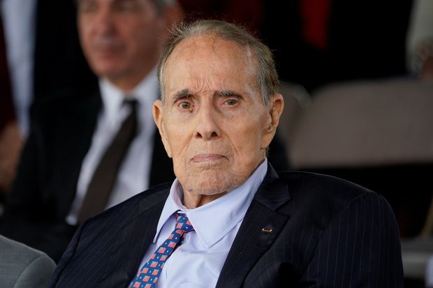
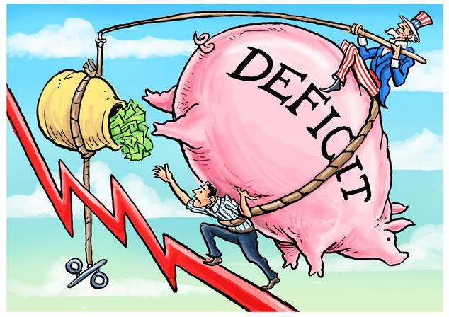
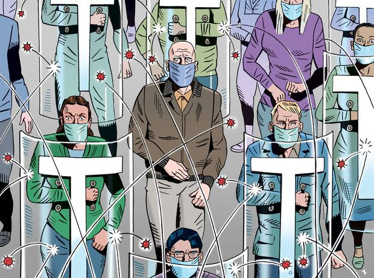

| 时间 | 分类 | 标题 | 副标题 | 正文 | 图片 |
|---|---|---|---|---|---|
| 2021-02-18 20:21:00 | Tech | IBM Explores Sale of IBM Watson Health | Business has roughly $1 billion in revenue and isn’t profitable, sources say | International Business Machines Corp. is exploring a potential sale of its IBM Watson Health business, according to people familiar with the matter, as the technology giant’s new chief executive moves to streamline the company and become more competitive in cloud computing. IBM is studying alternatives for the unit that could include a sale to a private-equity firm or industry player or a merger with a blank-check company, the people said. The unit, which employs artificial intelligence to help hospitals, insurers and drugmakers manage their data, has roughly $1 billion in annual revenue and isn’t currently profitable, the people said. Its brands include Merge Healthcare, which analyzes mammograms and MRIs; Phytel, which assists with patient communications; and Truven Health Analytics, which analyzes complex healthcare data. It isn’t clear how much the business might fetch in a sale, and there may not be one. IBM, with a market value of $108 billion, has been left behind as cloud-computing rivals Microsoft Corp. and Amazon.com Inc. soar to valuations more than 10 times greater. The Armonk, N.Y., company has said it’s focused on boosting its hybrid-cloud operations while exiting some unrelated businesses. |
 |
| 2021-02-18 20:18:00 | Politics | Major Donor Who Pleaded Guilty to Illegal Contributions, Influence Peddling Sentenced to 12 Years | California businessman Imaad Zuberi used foreign money to fund illegal donations | A major political donor was sentenced to 12 years in federal prison after pleading guilty in 2019 to myriad charges related to influence peddling, campaign finance violations and unregistered lobbying on behalf of numerous foreign states. In a sentencing hearing in federal court in Los Angeles on Thursday, U.S. District Judge Virginia A. Phillips imposed a stiff penalty on businessman Imaad Zuberi, 50 years old, giving him a 144-month sentence, near the high end of the federal sentencing guidelines for a first-time offender. She also ordered him to pay $15.7 million in restitution and a fine of $1.75 million. Mr. Zuberi capitalized on his access to U.S. politicians of both parties to drum up business from foreign governments and foreign individuals, whom he later defrauded as part of a scheme to enrich himself, prosecutors said in charging documents. He pleaded guilty to making illegal campaign contributions, obstruction of justice, tax evasion and falsifying lobbying records to conceal his work for foreign governments, “Zuberi turned acting as an unregistered foreign agent into a business enterprise,” said John Demers, a top Justice Department national security official in a statement. “He used foreign money to fund illegal campaign contributions that bought him political influence, and used that influence to lobby U.S. officials for policy changes on behalf of numerous foreign principals." Mr. Zuberi, a California businessman, gave generously to numerous high profile politicians over the years, including Barack Obama, Hillary Clinton and Donald Trump. |
 |
| 2021-02-18 19:34:00 | World | Canada Weighs Lighter Criminal Sentences to Combat Racism | Following protests across Canada after George Floyd’s death, the Trudeau government proposes repealing some mandatory sentences | OTTAWA—Canada on Thursday weighed changes to criminal-sentencing laws that the country’s attorney general argued would address systemic racism in the justice system. The proposed changes include the repeal of mandatory minimum sentences on all drug convictions and some firearm convictions, such as unauthorized possession and use of certain weapons in situations not linked to organized crime. Judges would be free to issue a sentence they deem appropriate under the circumstances. The government also will require police and prosecutors to consider other measures for simple possession of drugs, such as compulsory addiction-treatment programs. Currently, mandatory minimum penalties for drug and some firearm convictions are between one to four years in prison. Convictions for simple possession of drugs carry penalties of fine, and possible prison time of six months to up to seven years, depending on the type of narcotic and other circumstances. The changes are part of a broader push by Prime Minister Justin Trudeau this year toward a more progressive agenda in areas such as social spending and the environment. The proposed changes come as violent crime is on the rise in Canada, but is still well below the levels in the U.S. Incidents of violent crime such as assault and robbery rose in 2019 from the previous year by 11%, according to Statistics Canada’s most recent data. Offenses related to firearms were among the biggest increases. Homicides account for 0.1% of all violent crimes, and Canada’s murder rate is 1.8 per 100,000, versus the U.S. level of 5. |
 |
| 2021-02-18 19:31:00 | Business | Roku’s Revenue Surges 58% on Pandemic-Fueled Streaming Boom | Customers and marketers shift more of their attention away from TV and toward digital media | Roku Inc. reported a 58% increase in revenue during the holiday quarter, as the streaming-media service continued to benefit from customers watching more entertainment while stuck at home during the Covid-19 pandemic. “We think the pandemic has accelerated, and permanently changed the curve on, the shift to streaming,” Roku Chief Executive Anthony Wood said Thursday. Consumption of at-home streaming video entertainment has boomed during the pandemic as consumers have diverted more of their time and money to platforms such as Roku, the leading streaming-video competitor, with about 30% of the market, according to Strategy Analytics. Roku sells smart televisions with built-in streaming technology, as well as devices that users can plug into TVs. However, the company generates the bulk of its revenue by selling ads on streaming channels and taking a share of the streaming service’s subscription revenue and ad inventory. The ad business has boomed as marketers, following their customers, are shifting more toward digital media. The company’s total revenue rose to $649.9 million in the fourth quarter, up from $411.2 million a year earlier. Revenue at Roku’s platform business, which includes ad sales, jumped 82% to $471.2 million. |
 |
| 2021-02-18 18:58:00 | CIO Journal | Technology Survives Texas Freeze but Weather Taxes Workers | Critical technology infrastructure keeps operating, but companies say welfare of employees is a major concern |  |
|
| 2021-02-18 18:50:00 | World | U.S. Says It Would Meet for Nuclear Talks With Iran, Other Powers | Diplomats hope to hold physical meeting of senior officials in the next few weeks |  |
|
| 2021-02-18 18:49:00 | Opinion | Rush Limbaugh’s Complicated Legacy | He was a gifted entertainer and advocate, but in his later years certain flaws became more evident. | I meant to talk about something else this week, but my thoughts keep circling back to Rush Limbaugh. His obituaries in the mainstream press were mostly judgment, no mercy. It’s not nice when malice gets a final, unanswered shot. On the conservative side, TV commentaries were cloying to the point of cultish. It gives a sense of horror to see people who are essentially cold enact warmth of feeling. So here I give Rush without tears, and I guess the subtext has to do with the words “the base” in both a broad and narrow sense. He was a remarkable figure, a phenomenon. At his height he was the most powerful radio personality since Walter Winchell, who rose in the 1930s after radio’s beginnings. Limbaugh helped save radio and certainly saved the AM band by pioneering a new form, the national conservative call-in show. This spawned an entire industry. Most important, he created a community—an actual community of, at his height, tens of millions of people who thought along with him every day and through that thinking came to feel less lonely, less like outsiders in their views. When Limbaugh came on the scene, conservatives had gotten good at electing presidents, but were largely left out of the national conversation on the airwaves. To create a community of tens of millions of people in fractured, incoherent America was an astounding feat. To pretty much sustain it over 30 years was equally astounding. It is perhaps ironic but probably inevitable that that community was created by a man whom one of his closest friends this week called “an isolate.” Knowing him slightly over a few decades, I believe the most important thing to him was his profession, his show—three hours a day, five days a week, unscripted, with sound elements and callers. Preparation was all-consuming. He had to be constantly plugged in, staying on top of the news, monitoring opinions, settling on the one he’d put forward. Three hours of live performance takes everything you have. |
 |
| 2021-02-18 18:47:00 | Opinion | Magic Money for the Rich | The Biden Treasury has a plan to dodge Congress on IMF aid. | President Biden’s first G-7 meeting Friday is teed up as the launch of his “America is back!” tour. We wonder if he’ll boast about Treasury’s plan to finance the largest share of an International Monetary Fund dump of $1 trillion into the global economy—without Congressional approval. The official Treasury line is that it wants to work with international financial institutions to help “low-income countries who are struggling to respond to the pandemic.” Sounds nice until you look under the hood. What you see is a plan to use the IMF to subsidize mostly rich and middle-income countries, leaving the poor with little. The vehicle is a new IMF allocation of “special drawing rights,” or SDRs. Don’t let the alphabet arcana mislead you. This is about real money, and the U.S. will foot the biggest bill. Created in 1969, SDRs were meant to settle international accounts if the supply of available gold was inadequate for supporting trade and growth. That problem never materialized, and when the gold-exchange standard was abandoned in 1973, this “paper gold” lost its raison d’être. SDRs have since been reinvented as a tool of international income redistribution. When member nations want to use these paper credits—today worth about $1.44 each—they have to convert them into hard currency. Those seeking dollars bring their SDRs to the U.S., which has an obligation to exchange them for greenbacks. The country that converts the SDRs into dollars has to pay interest at the IMF, making the transaction the rough equivalent of a note with a coupon set at the three-month U.S. Treasury bill rate. Except the money never has to be paid back. Past SDRs allocations total 204 billion—worth about $290 billion. But that’s pocket change for Treasury Secretary Janet Yellen, who says “the time to go big is now” and the IMF target is $1 trillion. |
 |
| 2021-02-18 18:46:00 | Risk & Compliance Journal | Coinbase Names New Chief Compliance Officer | Melissa Strait joins the cryptocurrency exchange from Stripe |  |
|
| 2021-02-18 18:45:00 | Opinion | Life on Mars? Let’s Go Find It | NASA’s newest rover offers inspiration and soft power at a bargain. | The landing of NASA’s newest Mars rover lacked the explosive visuals of its launch last July, but there’s nothing so stirring sometimes as the cheers of anxious relief from behind the glowing computers at mission control. A journey of 293 million miles ended around 4 p.m. Thursday, when the craft’s descent stage used a “sky crane maneuver” to lower the rover its final stretch to the surface. That feat will probably be repeated this weekend by more than a few youngsters who can find enough LEGO bricks. But don’t be deceived by the scale: The Perseverance rover is 10 feet long and seven feet tall. Here on Earth it weighed 2,260 pounds, although in Mars’s weaker gravity the scale would read more like 866 pounds. Oh, and the rover carries a helicopter with four-foot rotors, setting up mankind’s first Kitty Hawk moment on another planet, one with an atmosphere that’s only about 1% the thickness of Earth’s. Perseverance’s mission is to poke around the Jezero Crater, a basin in Mars’s northern hemisphere that’s about 28 miles wide. NASA says the crater might have been a lake the size of Lake Tahoe, fed by a river that formed a delta, 3.5 billion years or so ago. The rover will scan for organic molecules and drill rock samples for a future return to Earth. Maybe someday Elon Musk can pick them up on his way home. NASA says the mission has cost about $2.4 billion so far, which these days is a rounding error for the federal government. But NASA is also the kind of discretionary program that could come under increasing pressure as entitlement spending gobbles up ever more of the federal fisc. Mars exploration is worth doing for its own sake, to push back the veil of ignorance about a planet that was known to the ancient Egyptians and seen through a telescope by Galileo. |
 |
| 2021-02-18 18:43:00 | Opinion | Trump Lost to Himself | His own pollster shows why he became a one-term President. | Donald Trump launched a personal attack on Mitch McConnell this week after the Senate GOP leader called the former President “practically and morally responsible” for the Jan. 6 Capitol riot. Mr. McConnell doesn’t need our defense, but we hope GOP voters aren’t buying Mr. Trump’s attempt to rewrite the history of the 2020 election. Mr. Trump’s statement didn’t claim that he won the election, but it did begin to burnish the result by taking credit for every GOP victory while boasting that he “received the most votes of any sitting President in history, almost 75,000,000.” Joe Biden still beat him by more than seven million votes. As important is why he lost, and for that look no further than Mr. Trump’s own pollster, Tony Fabrizio. His firm’s post-election analysis was first reported by Politico, but it’s worth resurfacing for Republicans to ponder. Mr. Fabrizio looked at data from exit polls and AP’s VoteCast in 10 highly competitive states that Mr. Trump won in 2016. Mr. Trump lost five of them in 2020—Arizona, Georgia, Pennsylvania, Michigan and Wisconsin—while winning Iowa, Florida, North Carolina, Ohio and Texas a second time. One stunning conclusion: Mr. Trump lost even though the electorate was more Republican in 2020 than in 2016. Mr. Fabrizio reports that Mr. Trump lost “largely due to a massive swing” among independents and erosion among Republicans. This helps explain how the GOP gained a dozen seats in the House even as Mr. Trump became the first President to lose re-election since George H.W. Bush. |
 |
| 2021-02-18 18:39:00 | Business | Facebook Blocks Collection of Sensitive Data Through Apps Following New York Probe | Investigation followed Wall Street Journal article detailing unauthorized sharing of personal information with the social-media giant | Facebook Inc. has taken steps to prevent it from collecting unauthorized data about people’s medical conditions, religious practices and finances but should do more to limit the sharing of such sensitive information, the New York Department of Financial Services said Thursday in an investigative report that was sharply critical of the social-media giant. The regulator concluded that Facebook has failed to appropriately investigate its past collection of sensitive data and called for further federal action. The state’s investigation began after The Wall Street Journal reported in 2019 that personal health apps, including a popular period and pregnancy tracker called Flo, were quietly passing data to Facebook. The transfer occurred through a snippet of code known as a software development kit without providing users notice or obtaining consent. Facebook would then match the app users’ sensitive data to their social media accounts, allowing the developers to target ads at them. Officially, Facebook’s terms of service prohibited app developers from providing the platform with data from children or about health, finance or other sensitive topics. But the company told the New York regulator that it had “routinely obtained” such data from developers, contrary to its own policies. |
|
| 2021-02-18 18:39:00 | Opinion | Biden Rescues Texas With . . . Oil | The feds dispatch diesel generators to ease the Lone Star deep freeze. | With Texans shivering as power outages continue for a fourth day, the Biden Administration announced it is deploying diesel generators to the state. Yes, good ol’ dirty diesel fuel is coming to the rescue again. The left’s denialism that the failure of wind power played a starring role in Texas’s catastrophic power outage has been remarkable. Liberals blame gas plants for not covering wind’s you-know-what when turbines froze amid surging demand. This is ironic since they seem to be acknowledging that fossil fuels are necessary, though they still want to banish them. California and New York also haven’t been able to break their hate-love relationship with fossil fuels. After a heat wave strained California’s grid last summer and renewables were MIA, Gov. Gavin Newsom suspended emissions rules and leaned on diesel emergency generators to keep people from baking. California’s electric utilities are also widely deploying diesel generators to provide backup generation when they cut power during heavy winds that can spark wildfires. These blackouts are increasingly common and caused a run on diesel generators a couple of years ago after millions in northern California lost power for days. As for New York, its gas plants can switch to oil. So if there is a shortage of gas due to weather or pipeline constraints, power plants can continue to run by burning oil. One irony is that New York Gov. Andrew Cuomo’s natural gas pipeline blockade, which has limited gas shipments from Pennsylvania, has reinforced the state's reliance on less-clean-burning oil for heating fuel. |
|
| 2021-02-18 18:28:00 | Life & Arts | ‘Crypto’: Hidden From View, Yet on Everyone’s Lips | An ancient term for something secret has been applied to many modern enigmas, including the hottest new form of currency | ||
| 2021-02-18 18:26:00 | Opinion | Follow the Science, Not the Teachers Unions | Biden’s CDC changes its tune for obvious political reasons. | Follow the science. That was Joe Biden’s promise to the American people—until Randi Weingarten and the American Federation of Teachers disagreed. I spent much of my time as governor saying that we needed to put children and parents first in public education. The teachers union in New Jersey spent tens of millions of dollars to oppose my reform efforts and protect the status quo. As a result our per pupil costs were among the country’s highest, and families in many urban districts were held hostage by failure. America’s public schools have mostly been closed to in-person learning for a year. Those that have opened are proving themselves to be relatively safe. In an article published Jan. 26 in the Journal of the American Medical Association, three researchers from the Centers for Disease Control and Prevention found “little evidence that schools have contributed meaningfully to increased community transmission” of the coronavirus. Data from reopened classrooms don’t show the rapid spread that has been observed in congregate living facilities and high-density work sites. The CDC researchers looked at more than 90,000 students in 11 North Carolina districts and found that only 32 students and staff members were infected in school. In the same period, 773 got infected outside school. On Jan. 26 the science was made clear: Schools can reopen with appropriate safeguards. Then the teachers unions got involved and the CDC changed its tune. |
|
| 2021-02-18 18:25:00 | Opinion | The Left Hated Rush Limbaugh Because He Had Their Number | Even in death they called him ‘divisive,’ as if their attacks on America aren’t intended to sow division. | The most powerful conservative medium in America—indeed, in the Western world—is talk radio. Tens of millions of people regularly listen to local and national radio talk hosts. Whenever I have European conservative writers on my own national show, I always note that in terms of conservative influence, the great difference between America and their countries is that we have talk radio and they don’t. Every guest has agreed. This was largely thanks to one man: Rush Limbaugh. There was talk radio before Rush, but he made it into a national force. Liberals and leftists dismissed him throughout his career, and again in their obituaries this week, as “divisive,” as if the left hasn’t been the most divisive force in America since the Civil War. This lack of self-awareness on the part of the left is mind-numbing. Calling America “systemically racist,” calling every white American “racist,” and separating college dorms and graduating exercises by race—that’s not divisive? Using the New York Times ’s demonstrably false “1619 Project” to teach America’s schoolchildren that our country wasn’t founded in 1776 but in 1619, when the first black slaves arrived in North America, and that the Revolutionary War was fought to preserve slavery—that’s not divisive? |
|
| 2021-02-18 18:25:00 | Opinion | Notable & Quotable: Conservatism Is Now a Public-Health Risk | Trump ‘chose judges for US courts who are dismissive of affirmative action and reproductive, labour, civil, and voting rights.’ | From “Public policy and health in the Trump era,” a Feb. 10 report by the Lancet, a British medical journal: Trump exploited low and middle-income white people’s anger over their deteriorating life prospects to mobilise racial animus and xenophobia. . . . His appeals to racism, nativism, and religious bigotry have emboldened white nationalists and vigilantes, and encouraged police violence and, at the end of his term in office, insurrection. He chose judges for US courts who are dismissive of affirmative action and reproductive, labour, civil, and voting rights; ordered the mass detention of immigrants in hazardous conditions; and promulgated regulations that reduce access to abortion and contraception in the USA and globally. |
|
| 2021-02-18 18:23:00 | Books | ‘Bugsy Siegel’ Review: A Slickly Lethal Gangster | The stylish bootlegger helped merge rival gangs into a syndicate—and became known for doing his own hit jobs himself. | ||
| 2021-02-18 18:22:00 | Opinion | A Slice of Persia in the Heart of Israel | Followers of the Baha’i faith are persecuted at home but welcomed abroad. | Israel is the last country where an Iranian raised in a Muslim family would have expected to find a place to feel at home. But that’s exactly what happened when I visited. In January 2013, I spent a day as a guest at the Baha’i World Centre in Haifa. The site is the spiritual and administrative heart of the Baha’i Faith, a religion founded in Iran with about five million adherents across the globe. The center’s grounds are bedecked with gardens and terraces. As I walked up and down the beautiful landscape, it struck me that everything about that hallowed place is Iranian. Even though I was in Israel, I felt as though I was walking in a Persian garden. The Baha’i faith is generally described as the largest non-Muslim religious minority in Iran. The faithful espouse noble principles like the importance of unifying humanity, the harmony between science and religion, and the equality of women and men. But, as the religion was founded after Islam, the Iranian government finds the faith’s adherents’ existence intolerable. Despite facing a longstanding state-sponsored campaign of oppression by Tehran, the community has found a way to persist. Before the international community exerted pressure on Iran in the 1980s, Baha’is were killed indiscriminately by vigilantes and often arbitrarily executed by the government. Today, that persecution has cooled to arbitrary imprisonments and arrests. Baha’is also see their economic advancement blocked, sometimes by being denied access to higher education. The continuation of this systemic and baseless campaign against the Baha’is makes me ashamed to be Iranian. After I left the Baha’i World Centre, I kept imagining that one day—perhaps not in my lifetime—it would dawn on Iranian civil society and government officials that the institution in Haifa is a significant part of Iran’s religious-national heritage. I dreamed that one day Iranians of all religious persuasions could visit and experience the enlightened and sublime feeling of fellowship offered by the institution. |
|
| 2021-02-18 18:07:00 | Markets | GameStop Hearing Was No Fun for Free-Trading Business Model | Questions were asked about Robinhood’s decision to restrict trading, but also about how it makes money from order flow. It will be hard to satisfy both concerns. | Lawmakers on Thursday had many questions on the finer points of U.S. equity-market structure, and some didn’t seem satisfied with the answers they were given. But their lines of questioning could still signal shifts in the environment that wouldn’t be to the benefit of online brokerages. Members of the House Financial Services Committee had questions about Robinhood Markets’s decision to cut off for a period of time buying of GameStop and other “meme” stocks. There were also a lot of questions about how exactly Robinhood makes money. It is in thinking how these questions connect that the potential industry implications of new regulations start to come into view. Prior to the hearing, a question posed by some lawmakers and customers was whether Robinhood’s decision was influenced by hedge funds and others who wanted to see the short squeeze on GameStop and other stocks curtailed. Robinhood Chief Executive Vlad Tenev testified that the decision was due to the surge in cash needed to satisfy its clearinghouse obligations, which shot up in light of enormous volatility. Instead, the day’s questions focused more on aspects of Robinhood’s general treatment of customers, particularly on whether its practice of selling order flow puts its customers at a disadvantage. But this practice isn’t what specifically drove huge price swings and losses for retail investors as the GameStop saga wound down. Whatever its impact on clients’ execution quality, the system as it exists certainly handled a huge amount of their activity: Citadel CEO Ken Griffin said Citadel Securities, which is among the market makers that buy order flow from Robinhood, executed trades on some 7.4 billion shares for retail investors on Jan. 27. That was more than the average daily total U.S. equity-market volume in 2019. At this particular hearing—though there may be more—there wasn’t spoken testimony from the Depository Trust & Clearing Corp. or its regulators about clearing rules, and whether those rules or the speed of clearing needs to be altered to help retail brokerages continue to supply individual investors with the tools to trade as they like. |
|
| 2021-02-18 17:58:00 | Opinion | While Houston Has Problems, a Touchdown on Mars | American engineering lands another rover on the red planet. Imagine what it could do for Texas. | Journalists covering the Texas electrical system as well as the lobbyists who created it enjoy calling it a “deregulated” power market. But consumers who study the system will quickly realize that we are not witnessing free enterprise at work in the Lone Star State. The first clue lies in the fact that 90% of the state’s electric load is controlled by a nonprofit entity run by a lawyer who answers to both the state Public Utility Commission and the state Legislature. The commission’s rules cover everything from pricing, reliability and interconnection to vegetation management and workforce diversity. A Journal editorial notes that political encouragement of alternative energy sources and overreliance on wind power have led to unnecessary pain for Texans. The rugged can-do Texas culture admired around the world is sadly not expressed in the architecture of its power market, which has for years featured the Enron-promoted model of competition. It is not market competition but rather government-managed competition in which regulators tell various private entities how they will interact with the nonprofit operator of the grid. Sadly for Texas residents, the attorneys, bureaucrats and politicians who created and oversee this system turned out to be all hat and no baseload. But far above Texas today there’s a stirring example of politicians and bureaucrats staying out of the way of engineers at least enough to enable another fascinating achievement. The Journal’s Robert Lee Hotz reports: CNN described the challenge overcome today by the Perseverance team: |
|
| 2021-02-18 17:57:00 | U.S. | Texas Cities Under Boil-Water Orders | Hundreds of thousands are still without power; Some residents bring in shovelfuls of snow to flush toilets | More than 14 million people in Texas are without safe drinking water, as the fallout of a severe winter storm exacts a historic toll. Cities including Austin, Houston and San Antonio are under boil-water notices until Monday. Some residents are bringing in shovelfuls of snow to flush their toilets. The harsh weather has crippled Texas’s energy grid, leaving more than four millions residents without electricity during the peak of the blackouts, many of them remaining without heat in subfreezing conditions for days on end. The cold snap has also caused a wave of burst water pipes, which led to a loss of water pressure and a shortage. Three dozen people have died due to weather-related issues across the U.S., according to the Associated Press. Traffic accidents make up the majority of those deaths, and half a dozen people have died from exposure. Huge swaths of residents without clean water don’t have the electricity needed to boil it amid the continuing outages. Many others have pipes that are dry. |
|
| 2021-02-18 17:48:00 | Film Review | ‘Nomadland’ Review: A Tale of Roaming and Yearning | Frances McDormand is a widow who takes to the road after losing her job and finds hope among fellow wanderers in Chloé Zhao’s feature | ||
| 2021-02-18 17:47:00 | Television Review | ‘Allen v. Farrow’ Review: Revisiting the Case | An HBO docuseries investigates Dylan Farrow’s 1992 child abuse allegations through interviews, home movies and revealing audiotapes. | A couple for 12 years, living separately in unmarried bliss, Woody Allen and Mia Farrow had every reason to believe in the durability of their union. They had made 13 films together and had added to their family a child born to them and adopted children. The world they inhabited changed suddenly when Mia wandered into Woody’s apartment one day in 1992 and, according to this documentary, discovered there nude photos of her daughter Soon-Yi Previn, who was in her late teens. It was only the beginning of a stream of events that led to the scandals and bitterness that lie at the heart of “Allen v. Farrow” (begins Sunday, 9 p.m., HBO), an extraordinarily detailed investigative work bolstered by home-movie footage and remarkably revealing audiotapes. Among them, one in which Mia, determined to know where she stands after the shock of the nude photos, bravely asks Woody, “Are you in love with me or Soon-Yi?” She gets nothing by way of an answer. But as the film soon makes clear thanks to its meticulous detail, there is in fact an answer of a kind. Soon-Yi has been visiting Woody at his apartment regularly, and the housekeepers who make up the beds, we’re told, have plenty of relevant evidence. The description of Mia’s first meeting with Woody is both evocative and charming. By the time she met him she had given birth to three sons and had adopted several children from all over the world. No one would ever want to date someone with seven kids, she suspected. But Woody did—reassured, no doubt, by the fact that they lived in separate apartments. “He showed me his New York,” Mia remembers. He took her to the tops of buildings, to fantastic nooks and crannies of the city that she’d never seen before. “Everything about that period was romantic,” she says, recalling the way they could signal one another from their apartments across Central Park by turning their lights on and off, and how she’d hang a big red towel out of her window for him to see. Woody has his own memories of being drawn to her, the qualities in her that he treasured, all of which the film quotes from his memoir “Apropos of Nothing”—a book pulled before ever reaching a printing plant when his publisher, Hachette, yielded to a mob of employees threatening to walk out if the company published it. The book was fortunately picked up quickly by Arcade, a less timid company. “Allen v. Farrow” is concerned precisely with the events that had made Allen a target of hysterical tribunals and of actors racing to join the fevered hordes broadcasting their shame at having worked in a Woody Allen film: Their pleas for forgiveness should fascinate future historians studying the forms of derangement that cropped up in our age. The central theme of the series is child sex abuse. Woody Allen had been accused, not long after the photo incident, of molesting his adopted daughter, 7-year-old Dylan Farrow—an accusation Mr. Allen has consistently and emphatically denied. Investigations conducted in two states found the accusations lacking in credibility, and Allen wasn’t charged. |
|
| 2021-02-18 17:46:00 | Opinion | ‘Katie Roche’ and ‘The Book of Magdalene’ Reviews: A Pair of Saints | The Mint Theater Company streams a 2013 production of Teresa Deevy’s little-known play; Houston’s Main Street Theater puts on a dystopian drama by Caridad Svich. | One of the few happy surprises of 2020 was the Mint Theater Company’s announcement that it had built up a private stockpile of broadcast-quality archival videos of its past productions and that it would make them available for streaming—for free. If you’ve never seen or heard of the Mint, Teresa Deevy’s “Katie Roche” offers a perfect opportunity to play catch-up with one of America’s most distinguished small theater companies. The Mint, according to its mission statement, specializes in producing “worthwhile plays from the past that have been lost or forgotten.” And some of its most spectacular finds have been works whose authors have themselves been forgotten. Teresa Deevy is a case in point. Born in Ireland in 1894, she planned to become a teacher but was struck by a case of Meniere’s disease that left her profoundly deaf. She studied lip-reading by going to the theater, where she fell in love with the plays of Chekhov and Shaw and decided to write for the stage. Dublin’s Abbey produced six of her plays, all successful but now forgotten, between 1930 and 1936. Then the Abbey lost interest in her work, and by the time of her death in 1963, her name was known only to those who had seen her plays in the ’30s. One of the Mint’s most consequential projects has been the exhumation, production and publication of Deevy’s plays, which began 10 years ago with “Wife to James Whelan.” “Katie Roche,” the most commercially successful of her works, was most deftly mounted in 2013 by Jonathan Bank, the company’s producing artistic director. I didn’t see it then, but I’m not surprised to report now that “Katie Roche” is a completely involving staging of a play whose latter-day obscurity makes no sense whatsoever. Performed on one interior set by a cast of eight, “Katie Roche” is the story of the title character (played with marvelous lightness of touch by Wrenn Schmidt), an illegitimate servant girl who “long ago made up my mind I’d be a saint” but is headed off en route to the convent by Stanislaus (Patrick Fitzgerald), the older brother of Amelia (Margaret Daly), for whom Katie works. Stanislaus unexpectedly proposes marriage to Katie, not knowing that in addition to her saintly aspirations, she already has a boyfriend (Jon Fletcher). What follows is a complicated skein of misunderstandings with painful consequences—leavened by touches of laughter along the way. The results leave no doubt that Deevy was unjustly forgotten, and thanks in part to this webcast and the Mint’s previous efforts, I’ll be surprised if smart regional companies aren’t inspired to take up her cause as well. Caridad Svich, whose work is regularly performed by regional theaters all over America, currently has three plays streaming, or about to open, at the same time: “The Book of Magdalene” at Houston’s Main Street Theater, “Theatre: A Love Story” at Cincinnati’s Know Theatre, and “Red Bike” at the Unicorn Theatre in Kansas City, Mo. “The Book of Magdalene,” the most ambitious of the trio, is a nocturnal exercise in magical realism, a pandemic-themed updating of the biblical story. Len (Jennifer Wang), the title character and protagonist, is a quietly melancholy young woman who makes a living at phone sex in a dystopian big-city world where people are no longer permitted to touch one another—they are separated by translucent plastic screens—and cannot even remember what it felt like to do so: “My elder tells me stories sometimes, but I don’t know if they’re true.” In the course of the evening, we see her talking and drinking with Ru (Mariam Albishah), her girlfriend; looking after Elder (Maria Schenck), her mother; “servicing” Suit (Pablo Bracho), one of her telephonic clients; and searching for a kind of faith that has been severely tested by the present moment. |
|
| 2021-02-18 17:44:00 | Film Review | ‘I Care a Lot’ Review: Guardian as Grifter | Rosamund Pike stars in Netflix’s black comedy about a woman who takes advantage of her elderly wards. | ||
| 2021-02-18 17:33:00 | Television Review | ‘Beartown’ Review: Accused Hometown Hero | In an HBO drama based on Fredrik Backman’s novel, a sexual assault allegation forces the players of a local Swedish hockey team to pick sides. | ||
| 2021-02-18 16:57:00 | World | Chinese Covid Vaccine Secretly Given to VIPs | In Peru and elsewhere, some politicians and the well-connected got China’s Sinopharm shot months ahead of health workers and other vulnerable groups | LIMA, Peru—After Peru’s death toll from Covid-19 surged last fall, nearly 500 politically connected people, including then-President Martin Vizcarra, were secretly given a Chinese vaccine, according to Peru’s government. The revelation that government consultants, lobbyists, cabinet ministers and the former president and his family were inoculated starting in September—before the vaccine was approved by Peruvian authorities—has resulted in a roiling scandal now dubbed Vaccine Gate. Peru’s health minister and other top officials have resigned, and prosecutors have opened a criminal investigation into what happened with the 2,000 undisclosed shots from a Chinese government-owned company. “I feel outraged and furious with this situation,” said President Francisco Sagasti, who took over the presidency after Mr. Vizcarra was impeached in November. “Those who have been involved in these totally improper and inappropriate acts won’t have a place in my government.” Last week, Peru announced the first vaccines had arrived, and a batch was taken to Lima’s Archbishop Loayza Hospital to inject into doctors. |
|
| 2021-02-18 16:56:00 | Books | Bestselling Books Week Ended February 13 | With data from NPD BookScan | ||
| 2021-02-18 16:55:00 | U.S. | NASA Lands Perseverance Rover Safely on Mars After ‘Seven Minutes of Terror’ | Two-year mission is the latest and most ambitious effort by NASA to find evidence of past life on the red planet | ||
| 2021-02-18 16:51:00 | U.S. | Bob Dole Diagnosed With Lung Cancer | Former GOP Senate leader and presidential candidate to start treatment next week | WASHINGTON—Former Sen. Bob Dole, the longtime Republican Senate leader who was the party’s nominee for president in 1996, said he has been diagnosed with stage four lung cancer and will begin treatment next week. “While I certainly have some hurdles ahead, I know that I join millions of Americans who face significant health challenges of their own,” said Mr. Dole, 97 years old, in a tweet Thursday morning. He said he would start treatment Monday. Mr. Dole fought in World War II and lost most use of his right arm and hand after being wounded in battle. He entered politics after returning home, winning a seat in the Kansas Legislature before successfully running for the U.S. House and then Senate. In 1976, Mr. Dole was picked as then-President Gerald Ford’s running mate in his unsuccessful re-election bid. After serving as the top Republican in the Senate, Mr. Dole won the GOP presidential nomination in 1996, but lost to Democrat Bill Clinton. As a lawmaker for decades, Mr. Dole played a role on legislation ranging from Social Security to the rights of the disabled. He was instrumental in both the Reagan-era tax cuts as well as the overhaul of the nation’s tax code in 1986. In recent years, Mr. Dole has become best known for championing causes tied to his generation. He was a driving force behind creation of the World War II Memorial on the National Mall, and then adopted the cause of “Freedom Flights,” which bring World War II veterans to visit the memorial built in their honor. |
 |
| 2021-02-18 16:38:00 | Business | Texas Restaurants and Grocers Hobbled by Cold Weather | H-E-B is among chains shortening hours due to power cuts, road closures | Power outages and supply problems tied to the frigid weather in Texas and surrounding states are constraining operations at the region’s restaurants and supermarkets. Some residents say they have waited in long lines at grocery stores and gas stations. Bottled water is hard to find and frozen food at some stores without power has spoiled. Over 400,000 customers in Texas still had no power and millions of residents were under a boil-water notice on Thursday as another winter storm pounded covered much of the U.S. with snow, freezing rain and extreme cold. H-E-B LP, a Texas supermarket chain, said it has shortened store hours and cut back on nonessential power usage, such as for lighting. The company placed purchase limits on some items, including water and propane tanks. Aldi Inc., another grocery chain, said Thursday that it reopened a Texas distribution center closed earlier in the week as snow and frigid temperatures descended across the southern U.S. Many restaurants in the region had stocked up for Valentine’s Day and Fat Tuesday, only to see reservations vanish as temperatures plummeted. Reservations at Texas restaurants this week were at the lowest levels since last May, according to online booking site OpenTable. Jack Gilmore said he closed the six Austin restaurants he co-owns on Saturday night due to the coming storm. He said that Valentine’s Day is typically his third-busiest night of the year; his Jack Allen’s Kitchen and Salt Traders Coastal Cooking restaurants were stocked with enough food for days of strong sales. He said some employees have asked if they can take milk home from restaurant coolers because they can’t find it at grocery stores. |
|
| 2021-02-18 16:33:00 | Politics | Yellen Hopes to See $1.9 Trillion Relief Bill Enacted Over Next Couple of Weeks | Treasury Secretary Janet Yellen defended the size of the administration’s $1.9 trillion relief package in an interview with CNBC Thursday, saying she hopes the measure will be enacted within the next couple of weeks. *More to come |
||
| 2021-02-18 16:01:00 | Business | Rush Limbaugh’s Conservative Radio Show Will Remain on the Air, Despite Host’s Passing | Voice of the media magnate will be the predominant one on radio show ‘until his audience is prepared to say goodbye,’ Premiere Networks says | For Rush Limbaugh, the late conservative media magnate whose brash and unapologetic voice dominated talk radio for over three decades, the show will go on. “The Rush Limbaugh Show” will continue, using archived segments and clips, primarily airing Mr. Limbaugh’s voice, “until his audience is prepared to say goodbye,” Premiere Networks, which distributes the show, said in a memo to affiliates. It will continue to air in its regular noon to 3 p.m. time slot Monday through Friday. Mr. Limbaugh died Wednesday at age 70 from complications from lung cancer, his wife Kathryn Rogers announced on his radio show yesterday. “No one can replace Rush Limbaugh,” said Hosea Belcher, senior vice president of affiliate marketing for iHeartMedia Inc.’s Premiere Networks. “Our plan is to provide the millions of loyal listeners with the voice of Rush Limbaugh for long term.” Mr. Limbaugh’s 30 years of audio has been archived and cataloged by subject, topic and opinion, Premiere said in its memo. The show will address the day’s news using relevant clips and guest hosts such as Mark Steyn, Todd Herman and Ken Matthews, who helped fill in while Mr. Limbaugh underwent cancer treatment over the past year, will help guide the show from segment to segment, the network said. |
|
| 2021-02-18 15:45:00 | Politics | Democrats Consider Piecemeal Approach to Immigration Bills | Biden’s comprehensive immigration measure faces steep odds, so Democrats and advocates are looking for ways to pass narrower measures | WASHINGTON—Democrats in Congress and progressive advocates are coalescing around a strategy to try to pass immigration bills piecemeal, as the Biden administration looks for ways to enact a pathway to citizenship for millions of immigrants without a permanent legal status. As President Biden’s comprehensive immigration bill—which he outlined on his first day in office—is set to formally be introduced in Congress on Thursday, Democrats are pursuing several tracks at once, aiming to see if the comprehensive bill gains any traction while simultaneously pushing other bills to offer legal pathways to narrower immigrant populations. “If there are moving vehicles where parts of this can happen, I think all of us would certainly say we want to...attach significant elements to a moving vehicle,” Sen. Bob Menendez (D., N.J.) said in a call with reporters Thursday. White House officials have used similar language with immigration advocates, saying they were embracing the approach of “multiple trains leaving the station,” according to two people familiar with their thinking. Mr. Menendez said he has already spoken to Republicans who might not be on board with the entire proposal but have said they are interested in various elements. |
|
| 2021-02-18 15:31:00 | World | Sex-Abuse Accusations Roil French Establishment | Allegations against renowned scholar trigger outpouring of accounts from victims of childhood sexual abuse and a reckoning among the elite | PARIS—A child sex-abuse scandal at the heart of the French establishment has triggered a bout of national soul-searching over cultural attitudes and a legal system that victims say leave minors vulnerable to sexual predators. In a memoir published last month, Camille Kouchner, a member of one of France’s most prominent political and intellectual families, accused her stepfather, the legal scholar and public intellectual Olivier Duhamel, of sexually abusing her twin brother from when he was around 14 years old. Those accusations have prompted a criminal investigation of Mr. Duhamel, a former member of the European Parliament, and sparked an outpouring of testimony from others who say they, too, suffered childhood sexual assaults by different abusers. President Emmanuel Macron has pledged to tighten France’s laws against sex with children. The National Assembly on Thursday approved a bill that would automatically define sex between an adult and a child younger than 15 years old as rape. The threshold would be 18 years old in cases of incest. That removes the burden on child victims under current French law to prove the sex wasn’t consensual—a step other countries took decades ago. Mr. Duhamel resigned in January as president of the foundation overseeing Sciences Po, one of France’s elite universities. His radio show was canceled, and he has disappeared from public view. A lawyer for Mr. Duhamel declined to comment. |
|
| 2021-02-18 15:30:00 | Life & Arts | Cocido Madrileño | For the classic experience, serve cocido in three courses with the traditional accoutrements: pickled piparra peppers, crusty bread, sliced spring onions and your favorite tomato sauce spiked with a hefty pinch of cumin. Or serve it all at once, as many locals do nowadays. | ||
| 2021-02-18 15:29:00 | Markets | Palantir Becomes an Unlikely Darling of the GameStop Crowd | Quarterly results and a lock-up expiration hit shares of the richly valued software maker, but it is finding support in online forums | Even a powerful crystal ball couldn’t have foreseen this. On Thursday, as the GameStop saga moved officially into the halls of Congress, the crowd that has been favoring the videogame retailer turned its eye to Palantir Technologies —a Denver-based software company named for such a magical element in the “Lord of the Rings” saga. Palantir spent the day as a top trending stock on Reddit’s WallStreetBets forum—coming in second only to GameStop—according to TopStonks.com. The two have little in common. Until relatively recently, GameStop was one of the most beaten-down stocks on Wall Street, due to widespread belief that its days were numbered. Palantir by contrast has been the hottest in a batch of popular software companies that went public last year. By the end of last week, Palantir’s share price was up 340% from the reference price on its direct listing on Sept. 30 and 236% above the closing price of its first trading day, showing that most of its gains didn’t come from the infamous first-day pop. Snowflake and C3.ai —both of whose share prices more than doubled on their first trading day—have picked up an additional 18% and 66%, respectively, from their first-day close. Then came Palantir’s fourth-quarter results Monday morning, which investors found disappointing mostly due to a forecast implying a significant deceleration in revenue growth later this year. That took nearly 13% off the stock that day. Another big drop came Thursday, as more than 383 million of the company’s shares were freed from a post-IPO lockup provision. By midday, trading volume on Palantir was more than triple the stock’s daily average since the start of the year, according to FactSet data. The selloff seems to have signaled a buying opportunity to online punters. Unlike GameStop, Palantir hasn’t been a big target of short sellers. But it does bring a whiff of controversy due to its national-security work, which in turn has led the company to depict itself as a Silicon Valley outcast. It also brings a loose association with Elon Musk—patron saint of the Reddit crowd—given that Palantir was co-founded by his former business partner Peter Thiel. |
|
| 2021-02-18 15:26:00 | Pro PE Legal Regulatory | GPB Capital Investors Ask Why the SEC Waited So Long to Act | The agency sought an ‘emergency’ order to put the private-equity firm under a monitor years after red flags emerged | The Securities and Exchange Commission’s recent move to install an outside monitor to oversee private-equity firm GPB Capital Holdings LLC has prompted some of the firm’s investors and their lawyers to ask what took so long. GPB Capital’s regulatory filings show that the SEC began probing the New York firm as early as 2018. In September of that year, Massachusetts securities regulators started an investigation of GPB’s sales of funds to Main Street investors, noting that the firm had failed to file required financial statements. Earlier this month, the Justice Department charged three men, including GPB’s then-chief executive, with fraud in connection with what New York Attorney General Letitia James described as a $1.7 billion Ponzi-like scheme. A few days later, the SEC requested an emergency court action that would impose a monitor, citing the need to protect thousands of investors with money at risk in four GPB private-equity funds. In a Feb. 8 court filing, the agency said it began trying to place a monitor inside GPB in the summer of 2020, but it was unable to reach an agreement with the firm, prompting it to seek the court’s intervention. “GPB Capital could have been stopped years ago on regulatory and compliance grounds,” said Jay Frederick, an investor and investment adviser in Little Rock, Ark., in an email. He said he raised concerns about GPB, in which he and some of his clients have invested, in a letter to the SEC in November 2019. He said the agency’s response was “lacking, at best.” |
|
| 2021-02-18 15:23:00 | Tech | Tech Industry Challenges Maryland Online Ad Tax | Lawsuit argues state’s newly enacted tax on digital advertising revenue represents an improper levy on the internet | WASHINGTON—Groups representing major technology companies filed a lawsuit Thursday challenging Maryland’s new online advertising tax, contending it is an improper levy on the internet. The suit in U.S. District Court in Maryland challenges the state’s recently enacted gross-receipts tax on digital advertising revenue as unconstitutional and illegal under a federal internet tax moratorium. The plaintiffs include the U.S. Chamber of Commerce, the Internet Association, NetChoice and the Computer and Communications Industry Association. Big tech companies including Facebook Inc., Alphabet Inc.’s Google unit and Amazon.com Inc. are represented by the groups. The suit will be closely watched as other cash-strapped states look to the growing online economy as a new source of tax revenue. Representatives of the tech companies contend that the tax will unfairly hit small businesses that depend on the internet during the coronavirus pandemic. |
|
| 2021-02-18 15:21:00 | Life & Arts | This Meaty Stew Recipe Is a Uniquely Satisfying Winter-Weekend Project | In Spain, the nourishing and protein-packed stew cocido is a ritual that plays out over three courses. Even better, the leftovers provide more meals throughout the week. | THE FIRST four times I called, I got a busy signal. Then, finally, an answer: “Best I can do is two people, three months from now, ¿Vale?” I was trying to clinch one of the toughest reservations in Madrid, and it wasn’t at some celebrity-chef spot but, rather, at Malacatín, a neighborhood tavern famous for one thing: cocido. “Book it,” I said, without a moment’s hesitation. Cocido, Spain’s quintessential boiled dinner, includes buttery chickpeas, fall-apart beef and chicken, vegetables smoky with pimentón (Spanish paprika), and a broth so rich it gives cassoulet a run for its money. For centuries, the dish has been the backbone of Spanish cold-weather cooking, but because of its medieval optics and laundry list of ingredients, it never quite caught on abroad like tapas or paella. Most people outside Spain have never heard of it much less made it at home, even if products like Serrano ham and morcilla (blood sausage) are increasingly easy to track down. Cocidos range from Catalonia’s meatball-laden escudella to Canarian puchero bobbing with corn on the cob, but the most famous version hails from Madrid. Spaniards love cocido madrileño for its ritualistic three vuelcos, or courses—first the broth, then the chickpeas and vegetables, then the meats. These can include beef shank, chicken, jamón, chorizo, ham hocks, bacon, trotters, pig ears, lardo, pancetta, blood sausage and marrow bones. The magic lies in mixing and matching proteins to hit the sweet spot between fatty and lean, smoky and sweet. “Cocido is liturgy in Madrid. It connects us to our childhood and to our grandmothers,” said José Alberto Rodríguez, the fourth-generation owner of Malacatín, as he led me to an elbow-worn table set with a bowl, a soup spoon and a cloth bib. “For those of us who grew up here, the smell of cocido is the smell of home.” (That smell carried on through the week back at my house, as leftovers found their way into soups, bechamel croquettes and ropa vieja, a saucy chickpea stew enlivened with spoonfuls of pimentón.) In “Madrid: A Culinary History,” María Paz Moreno writes that cocido’s origins can be traced to Sephardic adafina, “a filling stew of chickpeas, root vegetables, and lamb meat traditionally cooked in a large clay pot overnight on Friday and eaten on the Sabbath.” But if cocido has Jewish roots, what’s with all the piggy bits found in it today? Ms. Moreno explains that during the Spanish Inquisition, Catholic authorities kept a watchful eye on Conversos (converted Jews) to make sure they were acting like proper Christians. Fearing persecution, these converts are thought to have overcompensated with their use of non-kosher meats. Adafina was also a likely ancestor of French pot-au-feu and Italian bollito misto. |
|
| 2021-02-18 15:04:00 | Business | Volkswagen Considers Listing Minority Stake in Porsche | German car maker could list a stake of as much as 25% in its sports car brand | BERLIN— Volkswagen AG is considering listing as much as 25% of its sports car maker Porsche AG , a move that analysts said could boost the market value of the entire Volkswagen group and raise cash needed for investment in electric vehicles and new technology. The idea of listing Porsche or selling a stake in luxury car maker Audi isn’t new within Volkswagen’s top management, but people familiar with the company’s thinking said talks within Volkswagen have taken on greater urgency as the company pivots hard toward electric vehicles and sees its market value dwarfed by technology rivals such as Tesla Inc . The discussions are still at a very early stage, the people said, adding that if Volkswagen decided to move forward with the listing, it might not happen until next year, if at all. Volkswagen shares rose almost 4% to €167.80, equivalent to about $203, in late afternoon trading on the Frankfurt stock exchange. The company declined to comment about a potential listing of Porsche. |
|
| 2021-02-18 15:00:00 | Business | How Covid-19 Upended WWE | World Wrestling Entertainment’s CFO outlines how the pandemic has altered the company’s live-event business model | For decades, World Wrestling Entertainment Inc. has had a simple formula for making money: traveling to cities across the country and televising acrobatic wrestling matches between spandex-clad athletes. Merchandise sales provided additional revenue, as did the streaming of matches in recent years on the WWE Network. The pandemic dented that model. Virus-related restrictions put WWE’s stadium shows on hold, resulting in an estimated $90 million in lost revenue in 2020. In the face of that setback, the company has found a new way to stage its performances and is accelerating its efforts to find new audiences. It’s producing shows for its TV and streaming audiences at a temporary production facility in Florida. And in January it signed an exclusive streaming deal with NBCUniversal Media LLC’s Peacock streaming service, expanding its reach, especially among younger consumers. It also created a new show aimed at attracting viewers in India. Kristina Salen, WWE’s chief financial officer, joined the wrestling company last summer, following stints in the startup world and as the former CFO of Etsy Inc. She has overseen investments aimed at re-creating the look and feel of a stadium show at the company’s Florida production facility, including lasers, pyrotechnics, and video displays in the arena’s seating area that sometimes show fans or characters in the narrative of the performance. “WrestleMania,” WWE’s first live event in more than a year, and the only one scheduled so far in 2021, is set to take place on April 10 and 11. But attracting and maintaining consumers’ attention could be a challenge. Average viewership of two of the company’s prime-time programs, “Raw” on the USA Network and “SmackDown” on Fox, fell sharply in the early months of the pandemic, though viewership began to stabilize later in 2020. WWE Network had 1.5 million paid subscribers to its streaming service as of Dec. 31, up 6% from a year earlier but down from the early months of the pandemic. |
|
| 2021-02-18 14:59:00 | U.S. | What Walmart Raises Mean for President Biden’s $15 Minimum-Wage Plan | Supporters of a higher minimum wage can argue the move is proof employers can afford wage increases, while opponents can say it is an example of effective free-market forces | Walmart Inc.’s pledge to lift its average hourly pay above $15 comes in the middle of a Washington debate on whether to more than double the federal minimum wage. The big-box retailer’s goal is politically significant because it aligns with President Biden’s proposal to raise the federal minimum wage to $15 an hour from the $7.25 an hour that has been in place for 11 years. It also comes from the nation’s largest private employer, with stores located in different labor markets across the country. But Walmart’s announcement Thursday isn’t an endorsement of Mr. Biden’s plan, which is part of a $1.9 trillion Covid-19 relief proposal by Democrats in Congress expected to pass the House later this month. The company supports a higher federal minimum wage, but not $15 an hour. While it plans to raise pay for 425,000 hourly workers from an average above $14 in January 2020, its minimum starting wage would remain at $11 an hour. Still, the company’s move could play into both sides of the federal minimum-wage debate. Democrats who support Mr. Biden’s wage plan can argue Walmart’s pay raises are proof employers can afford wage increases despite the pandemic’s economic disruptions, economists and analysts say. Republicans who oppose doubling the federal pay floor will likely see it as an example of effective free-market forces, arguing the government doesn’t need to intervene. |
|
| 2021-02-18 14:58:00 | Life & Arts | Give Yourself Better Pep Talks | A behavioral economist answers questions about self-talk, virtual office hangouts and return policies for big purchases. | ||
| 2021-02-18 14:49:00 | Life & Arts | Ivy League Cancels Spring Sports Season Over Covid-19 | Other conferences have played through the pandemic, but the Ivy League has remained completely on the sidelines since last March despite pressure from wealthy alumni | ||
| 2021-02-18 14:35:00 | Real Estate | How to Avoid the 5 Worst Home Office Design Mistakes | We asked designers and architects for the inspiration-crushing gaffes they see in residential workspaces, and what to do instead. Plus: the most egregious home-office setups they’ve witnessed. | FOR A YEAR now we’ve all been getting copious advice on how to make our remote workspaces worthy of our toil. Why then, incredulous designers want to know, are they still seeing people’s unmade beds during video calls? “Professionals should exude professionalism,” said New York designer Vicente Wolf, who’s seen home offices cheapened by obviously plastic floral arrangements. “Keep the space clean and tidy. Straighten pictures, edit your bookcase. Take the time to see your background as it is conveyed by your computer’s eye.” Here, interiors pros share five other home office blunders they’ve observed, and what to do instead. The quickest way to make your office feel like a college dorm room? Shove an undersized desk against a windowless wall, warned Dallas architect Eddie Maestri. “Nothing looks more sad and depressing.” Instead: “What you see affects your mood and increases your work performance,” said Mr. Maestri. If a real vista isn’t available, he positions the desk so its occupant has an expansive view of the room. |
|
| 2021-02-18 14:23:00 | Opinion | Gov. Cuomo’s Covid-19 Chickens Come Home | Gov. Cuomo, sometime media darling, isn’t used to being called out, especially by members of his own party. | Regarding your editorial “The Cuomo Covid Coverup” (Feb. 13) concerning the coverup of the nursing-home Covid deaths: Top aide Melissa DeRosa in effect has admitted that New York Gov. Andrew Cuomo’s team was afraid the opposition would make political hay of the revelation. Of course they would. The Democrats have politicized the virus from the moment President Trump closed our airports to Chinese flights (picture Nancy Pelosi dancing on the streets of Chinatown). Gov. Cuomo, sometime media darling, isn’t used to being called out, especially by members of his own party. Jim Barber Mesa, Ariz. Your editorial rightly mentions the underreporting of nursing-home deaths from Covid-19 in New York state. The real scandal, however, is that most of these deaths were avoidable. |
|
| 2021-02-18 14:20:00 | Opinion | Remember Inflation? It May Again Be Close | Add to the proposed fiscal stimulus the record-breaking increase in the money supply M2 of more than 25% on a year-over-year basis and you have an enormous potential for future inflation. | In “The Short March Back to Inflation” (op-ed, Feb. 4), Michael D. Bordo and Mickey D. Levy argue that the recent, large increase in the savings rate is a storehouse of potential demand that will drive up prices, citing the experience of the 1960s. They ignore, however, the significant increase in the inequality of income and wealth. The savings of the top 1% to 10% aren’t likely to produce a significant burst of demand for goods and services throughout the economy. They may push up the prices for goods and services which are scarce but not in those parts of the economy in which most people function. Frank Nicolai Fort Washington, Md. Vast new spending plans are being considered by Congress to help overcome the effects of the pandemic. While Democrats want to spend $1.9 trillion, most Republicans argued for much less. A group of 10 Republican senators made a counteroffer of $618 billion but President Biden wasn’t interested. The bipartisan Committee for a Responsible Federal Budget, of which Janet Yellen was a director until her recent elevation to secretary of the Treasury, points out convincingly that the actual output gap that needs to be closed in 2021 amounts to only $380 billion. Therefore, all the spending proposals on the table amount to vast overkill. |
 |
| 2021-02-18 14:02:00 | World | U.S. Defense Chief Reassures Allies and Seeks More Spending in NATO Debut | Austin aims to soothe allies after tensions with Trump administration, but maintain pressure on spending | The Biden administration kicked off a round of high-level diplomacy with its European allies at a NATO meeting where it sought to soothe allies bruised by former President Donald Trump’s criticism and snap decision-making. U.S. Defense Secretary Lloyd Austin, in his first meetings with counterparts at the North Atlantic Treaty Organization on Wednesday and Thursday, reaffirmed President Biden’s aim to revitalize ties and commitment to its mutual-defense pact, while urging allies to meet defense-spending targets, U.S. officials said. Mr. Biden will on Friday speak via video link at the Munich Security Conference alongside European leaders including German Chancellor Angela Merkel, French President Emmanuel Macron and U.K. Prime Minister Boris Johnson. He will also meet virtually with leaders of the Group of Seven wealthy democracies to discuss the coronavirus pandemic, the global economy and dealing with China. “We have a unique opportunity to open a new chapter in relations between Europe and North America,” NATO Secretary-General Jens Stoltenberg said Wednesday. Mr. Biden took office last month saying he wants to rebuild U.S. alliances, starting with NATO. Mr. Trump launched frequent broadsides against other members, particularly Germany, for not meeting the alliance’s target of spending 2% of gross domestic product on defense. |
|
| 2021-02-18 13:52:00 | Politics | Ted Cruz Says He Was Being a ‘Good Dad’ in Going to Cancún During Texas Freeze | GOP Senator says he was flying back immediately after accompanying daughters to Mexico during emergency at home | WASHINGTON—Sen. Ted Cruz (R., Texas) said he planned to fly back from Mexico later Thursday, after drawing widespread criticism for taking his family on vacation in Cancún as his state struggled with freezing temperatures and widespread power outages. In a statement released Thursday afternoon, Mr. Cruz said he accompanied his daughters to Mexico for an impromptu trip and was flying back immediately. The statement didn’t say whether his plans were influenced by the blowback at home. “With school canceled for the week, our girls asked to take a trip with friends. Wanting to be a good dad, I flew down with them last night and am flying back this afternoon,” he said. Mr. Cruz said he and his staff have been in regular communication with state and local leaders. Mr. Cruz’s staff didn’t respond to a request for comment. The Senate is currently on recess and expected to reconvene next week. Photos were posted on social media Wednesday night of Mr. Cruz and his family boarding a flight that appeared to be heading to Cancún. As more clues emerged, his office declined to respond to questions about the trip before putting out the statement. A spokeswoman for the Houston Police Department said that Mr. Cruz’s staff had contacted the police force to request assistance for his departure. |
|
| 2021-02-18 13:14:00 | U.S. | Former Illinois House Speaker Madigan Steps Down From Legislature | Longest-serving speaker in U.S. history embroiled in bribery investigation | CHICAGO—Former Illinois House Speaker Michael Madigan resigned his legislative seat representing a Chicago ward Thursday, amid a continuing federal probe into a kickback and bribery scheme allegedly aimed at influencing him. The 78-year-old protégé of former Chicago Mayor Richard J. Daley had been the longest-serving state house speaker in U.S. history. “It’s no secret that I have been the target of vicious attacks by people who sought to diminish my many achievements lifting up the working people of Illinois,” he said. “The fact is, my motivation for holding elected office has never wavered. I have been resolute in my dedication to public service and integrity, always acting in the interest of the people of Illinois.” Just over a month ago, Mr. Madigan stepped aside in his bid to be re-elected speaker after failing to gather enough votes in his caucus to guarantee victory. Instead, state Rep. Emanuel “Chris” Welch, a Madigan ally from the Chicago suburbs, became the first Black House speaker in the history of the state. Mr. Madigan had served as House Speaker for all but two years since 1983. Last July, Mr. Madigan was referred to as Public Official A in a federal deferred prosecution agreement with Commonwealth Edison. The Exelon Corp. subsidiary agreed to pay a $200 million fine to resolve charges that it had handed out jobs and internships to Mr. Madigan’s associates in a bid to win support from Mr. Madigan for its legislative agenda. |
|
| 2021-02-18 13:12:00 | Life & Arts | Unlucky in Dental Surgery and Ready for Worse | I figure it’s just a matter of time before lightning strikes me—or a shark attacks | ||
| 2021-02-18 13:11:00 | Tech | Clubhouse and Twitter Spaces: The New Way to Play, Network and Escape Video Calls | Even if it’s a pandemic-boosted fad, there are real reasons chatty, audio-only social media makes sense | Look, it’s totally normal. Totally, absolutely normal to find yourself in the bathroom, an AirPod in one ear, listening to a live conversation on Clubhouse about the future of artificial intelligence. Totally normal for not-normal times, that is. I give you this glimpse into my thrilling life because it illustrates a few reasons live, audio-only social-media venues, particularly Clubhouse and Twitter Spaces, have everyone talking right now: • It’s dead simple to join a conversation from... anywhere. • It’s all microphone; no camera, no worrying about your hair or color-coded bookshelf background. |
|
| 2021-02-18 13:09:00 | Markets | U.S. Natural Gas Shortage Hampers Blackout Recovery | Frozen oil and gas wells and pipeline infrastructure have reduced the fuel available to power plants | A giant shortage of natural gas is hindering a recovery from the devastating cold spell that left millions without power in the nation’s midsection. Natural gas production across the U.S. has fallen about 20% over the last week, a rapid decline driven by frozen oil and gas wells and pipeline infrastructure in Texas and other states. In Texas, which produces about a quarter of the country’s gas, production has fallen more than 30% and some of the largest power-plant operators say they have had difficulty getting enough gas. Texas is starting to thaw out from its worst winter storm in a generation, and the state’s main grid operator said it has restored power to the majority of homes. Just under 500,000 electricity customers throughout the state were without power as of Thursday morning, which is down sharply from four million earlier this week, according to PowerOutage.US data. CenterPoint Energy Inc., the company furnishing power to most of the Houston area, said it had restored power to all but around 31,000 customers by Thursday morning, down from more than one million customers earlier in the week. But analysts say the natural gas shortfall could linger for weeks as producers and pipeline operators scramble to restart operations. Luke Jackson, an analyst at S&P Global Platts, said the supply shortfall may be larger than estimated, due to lack of publicly available data from intrastate pipelines in Texas, which don’t report gas volumes. U.S. natural gas production fell from roughly 92 billion cubic feet a day to around 72 billion over the last week, according to S&P Global Platts data. During the same period national gas demand soared, at its peak, to about 152 billion cubic feet a day as a swath of the country turned up the heat in their homes. |
|
| 2021-02-18 12:35:00 | Opinion | We’ll Have Herd Immunity by April | Covid cases have dropped 77% in six weeks. Experts should level with the public about the good news. |  | |
| 2021-02-18 12:19:00 | World | In Hunt for Covid-19 Origin, WHO Team Focuses on Two Animal Types in China | Investigators say ferret badgers and rabbits sold at Wuhan market could have played a role in the spread to humans | World Health Organization investigators are honing their search for animals that could have spread the new coronavirus to humans, identifying two—ferret badgers and rabbits—that can carry the virus and were sold at a Chinese market where many early cases emerged. Members of a WHO team probing the pandemic’s origins say further investigation is needed into suppliers of those and other animals at the market, some of which came from a region of China near its Southeast Asian borders where the closest known relatives of the virus have been found in bats. Team members say they have yet to establish all the creatures sold, legally or illegally, live or dead, at the market in the Chinese city of Wuhan that was tied to the first known cluster of cases in December 2019. China’s National Health Commission and foreign ministry declined to comment. The WHO team is juggling multiple competing hypotheses and still isn’t sure if the virus first jumped from animals to humans at the market or if it was circulating elsewhere first. But working with the available evidence, they are gaining a stronger understanding of which animals could have plausibly been vectors. |
|
| 2021-02-18 12:11:00 | Life & Arts | Fancy Stuffies | The original stuffies were simple, with bread as a binder for the clam stuffing. This recipe is a bit fancier, a nice hors d’oeuvre with cocktails or addition to a tapas-style spread. | ||
| 2021-02-18 12:02:00 | Life & Arts | This Classic New England Seafood Recipe Brings the Beach Home | Big, briny and warmed up with spice, Rhode Island-style stuffies are a seaside vacation baked to order. These stuffed clams freeze well, too, so you can keep them on hand for near-instant gratification anytime. | ||
| 2021-02-18 11:51:00 | Markets | Don’t Let Walmart’s Slowing Sales Fool You | Walmart’s future revenue growth could be limited, but the retailer has ways to juice its bottom line | Walmart may have given the wrong impression with all that talk about TikTok. At the end of the day, it is a slow-growing, mature retailer—and that is perfectly fine. The retailer had a standout holiday quarter. Net sales grew 7.4% in the quarter ended Jan. 31 compared with a year earlier. U.S. comparable sales grew 8.6%, far exceeding the 5.3% growth that analysts polled by Visible Alpha had expected. E-commerce sales grew 69% in the quarter. Yet Walmart shares dropped almost 6% Thursday morning after results were announced. Two things may have weighed on investors. The company incurred a net loss of $2.1 billion and gave relatively muted guidance, saying that U.S. comparable sales would rise by a low-single-digit percentage this fiscal year compared with the 8.6% increase it saw for the last full fiscal year. Neither is particularly worrisome. The loss is largely a result of charges related to previously announced sales of foreign operations. As for the guidance numbers, growth was bound to slow some after a bumper year. Before the pandemic, Walmart’s U.S. comparable sales had been growing in the low-single-digit percentage range, if not declining, for the last decade. That has also been the case for other mature retailers such as Target and Kroger. This means the real potential for a company like Walmart comes from how much more profit it can juice from a slow-growing revenue base. And things look pretty promising on that front. Fueled by Walmart’s e-commerce growth, advertising revenue nearly doubled last year and Walmart said Thursday that it should be a multibillion-dollar business in the near future. Morgan Stanley estimates that it could generate $4 billion of revenue and $2 billion of operating income by 2025. That would translate to roughly 9% of last fiscal year’s operating income. |
|
| 2021-02-18 11:46:00 | CMO Today | Omnicom Beats Expectations but Urges Caution as Pandemic Continues | Owner of ad agencies BBDO and DDB reported revenue dip in fourth quarter of 9.3% |  |
|
| 2021-02-18 11:42:00 | Markets | Tiny-Company Boom Makes Markets Look Silly | Six members of the Russell Microcap index have risen so much that they are now larger than the smallest S&P 500 stocks | ||
| 2021-02-18 11:01:00 | Life & Arts | Do We Need an Anti-Nobel Prize? | From assigning credit for discoveries to teaching AIs to think, rewarding success is a crucial but difficult task for science. | ||
| 2021-02-18 11:00:00 | Business | Michaels Stores’ Strategy for Keeping the Covid Bump Alive | The company’s CEO is moving away from the general crafts market and targeting a different kind of do-it-yourselfer | When Ashley Buchanan was tapped as chief executive of Michaels Cos., he knew he was taking over a slumping company. Sales were limping along, hurt by messy stores, a sluggish supply chain and competition from both big-box and online retailers. As he officially took the reins last April, though, the arts-and-crafts chain was facing an even larger challenge: Covid-19. Most of the company’s 1,200 U.S. and Canadian locations closed to in-store shoppers amid pandemic lockdowns. Sales plummeted 27.6% in the quarter ended last May 2. Then stores reopened, and homebound shoppers crafted. Americans painted, made masks, knitted and looked for ways to entertain children without screens. Michaels’s sales soared 12% in the quarter ended last Aug. 1, and 16.3% in the quarter ended Oct. 31, which included an early holiday sales rush and 128% e-commerce sales growth. Mr. Buchanan, who previously spent over a decade in executive roles at Walmart Inc., aims to use the Covid-19 sales bump to remake Michaels. He hopes to attract more shoppers by moving away from the general crafts market and targeting “makers”—people who gravitate to do-it-yourself projects or make items to sell through their own small businesses. To start, Mr. Buchanan has focused on retail basics like keeping shelves stocked and speeding and simplifying the supply chain, as well as adjusting to Covid-19 shopping patterns by ramping up online pickup-and-delivery options. The company is also testing an online marketplace that would let arts-and-craft enthusiasts share ideas, watch instructional videos and sell their wares. Michaels hopes it will launch later this year, says Mr. Buchanan. |
|
| 2021-02-18 10:52:00 | Life & Arts | Why Chile Crisp Is Still Trending | Sometimes a viral food sensation is all it’s cracked up to be. This crunchy condiment truly rejuvenates jaded palates. | ||
| 2021-02-18 10:50:00 | Markets | Who Are Keith Gill and Other Key Players at the GameStop Hearing? | Panel to focus on recent volatility in shares of GameStop and other companies | The House Financial Services Committee is calling several witnesses in a hearing Thursday, including individual investor Keith Gill, to find out what happened during the retail-investor-led run-up of GameStop Corp. The committee said the run-up raises questions about brokerage buying restrictions, payment for order flow, existing rules for shorting stocks, and anti-market-manipulation laws in the social-media era. Here’s what you need to know about the witnesses: Keith Gill, 34, lives outside Boston and acquired big positions in GameStop stock and options. As the pseudonymous “DeepF—ingValue” on Reddit’s WallStreetBets forum, he inspired many GameStop traders. Gabe Plotkin, 42, is the founder of hedge fund Melvin Capital Management LP and protégé of trader Steve Cohen of Point72 Asset Management LP. Melvin was one of the hottest hedge funds around—until it lost billions in January from bets against GameStop and other stocks. Point72, hedge fund Citadel LLC and Citadel partners invested $2.75 billion in Melvin in January as its losses mounted. |
|
| 2021-02-18 10:25:00 | Markets | No Pandemic Sugar Rush for Nestlé | Swiss maker of KitKat candy bars hasn’t seen the same sales spikes as other snack giants during the pandemic, but looks steadier in the long run | The Covid-19 crisis has produced some surprising winners among the ranks of global food companies, including Kraft Heinz . Nestlé ’s performance has been less spectacular by comparison but may prove more sustainable. On Thursday, the world’s biggest food business said sales at constant exchange rates increased by 3.6% last year compared with 2019. That is shy of the 4% to 6% range that Chief Executive Mark Schneider was aiming for this year. Last week, Kraft Heinz said its sales over the same period increased by an impressive 6.5%. Shoppers have gone back to legacy brands that had fallen out of fashion with health-conscious consumers in recent years. The pandemic has been more of a mixed bag at Nestlé. Roughly one-sixth of its revenue comes from products like candy bars that tend to be consumed outside the home. Demand in this part of the business plummeted 30%. Trends were more positive in its pet-care division, where sales increased by more than 10%. Coffee brands also proved resilient. Fears that the economic slump would cause consumers to trade down to cheaper alternatives haven't materialized so far. The share of Nestlé’s sales generated by premium products like Nespresso coffee and Purina pet food increased to 30% of the group total in 2020, up from 26% a year earlier. Strong demand for these more expensive goods is offsetting weaker sales of mainstream brands. |
|
| 2021-02-18 10:00:00 | Life & Arts | The Nets Might Have the Best Offense and Worst Defense in NBA History | Brooklyn reflects a philosophical shift across basketball: Is more offense the most effective defense? | ||
| 2021-02-18 09:58:00 | Real Estate | Land Rush Is On in Four States That Approved Recreational Pot Last Year | Owners of warehouses, retail space able to charge a premium when selling or renting to businesses in the cannabis industry | Voters in four states last year approved the recreational use of marijuana. That is likely to launch a land rush there for warehouses and retail properties. Similar measures in other states have sparked heated competition for these types of real estate. Owners have been able to charge as much as three times market rates when selling or renting to businesses involved in the cultivation, distribution, processing or sale of cannabis, according to brokers, landlords and cannabis industry executives. Landlords can charge this pot premium because properties typically have to meet a range of local restrictions to qualify, such as being a certain distance from churches or schools. The owner of one sought-after Arizona retail location could have sold it for “a couple hundred thousand dollars” before the state’s recreational ballot measure was approved in November, said Steve White, chief executive of Harvest Health & Recreation Inc., a multistate cannabis business that is involved in recreational- and medical-marijuana sales in Arizona. |
|
| 2021-02-18 09:26:00 | Markets | Barclays’ Partial Victory Lap | Last year validated Jes Staley’s decision to keep the lender’s investing banking business, but he still must show that the bank can generate decent overall returns | Last year’s results vindicated Barclays ’ diversified banking strategy, but overall returns are still disappointing and the stock price remains stubbornly low. The UK-headquartered bank on Thursday posted a £3 billion profit before tax for 2020, equivalent to, $4.16 billion, with strong capital markets returns offsetting contraction in its retail and credit card businesses. After years of activist pressure, Chief Executive Officer Jes Staleyclaimed victory for his strategy of a combined retail and investment bank. Barclays gained share and booked bumper profits in capital markets, offsetting poor results in its credit card and retail businesses. But overall return on tangible equity was still a disappointing 3.2%, well below its 10% long-term target. Shares fell about 4%, trading near 0.45 times book value. Granted, last year was particularly nasty. Often during a downturn, customers and small businesses run up their debts slightly as they weather the storm, giving banks higher revenues but also higher loan loss provisions. This time fear pushed consumers and small businesses to pay down their debts and save cash even as provisions for loan losses jumped. But the investment banking upside was also pretty extraordinary. Given the massive liquidity and volatility in the capital markets, it could be argued that the trading profits should have been big enough to generate decent overall returns. At many U.S. banks, they indeed were. In 2020, JPMorgan Chase posted a 14% return on average tangible common shareholders’ equity and Citi made 6.9%. Management counts 2020 as a decent result under the extreme circumstances. The strategy is sound and the bank has the right footprint, says Mr. Staley, it just needs to execute as the economy reopens after vaccines rollout. It is possible. Barclays’ U.K. and U.S. credit businesses used to provide double-digit returns, and a bounceback in consumer spending could bring back those levels. The lender will also need to hold on to some of the market share gains made in the group’s trading business. |
|
| 2021-02-18 08:57:00 | Life & Arts | We’re Still Dreaming of Mars and Martians | Long before probes discovered the truth about Mars, stories about its inhabitants helped us understand the best and worst of humanity. | This afternoon, NASA’s Perseverance rover will attempt to land on Mars, making it just the fifth vehicle on a planet about half the diameter of Earth. But compared with the eons of total emptiness until 1997, when NASA landed its first Mars rover, Sojourner, the neighborhood is getting pretty crowded. In fact, Perseverance is the third spacecraft to reach Mars just this month. On Feb. 9, the UAE’s Hope Probe arrived in orbit around Mars, where China’s Tianwen-1 joined it the very next day. In May or June, Tianwen will attempt to land its own rover on the Martian surface, making China the second country to achieve that feat. The purpose of these missions is to study the composition of Mars’s soil and atmosphere. The one thing they’re certain not to find is what humanity long dreamed of finding on the red planet: an intelligent species with a civilization and technology comparable to our own. For almost a century, from the 1880s to the 1960s, Martians were humanity’s favorite shorthand for extraterrestrial life. Science fiction as a literary genre grew up with Martians, starting with H.G. Wells’s 1898 novel “The War of the Worlds,” about invaders from the red planet. So did the movies, which have used Mars as a showcase for special effects since Thomas Edison’s 1910 film “A Trip to Mars.” Martians were so popular in the early 20th century that the word itself now has a nostalgic feel, conjuring the past’s dream of a future that never came to be. That humanity would fixate on Martians rather than Venusians or Saturnites wasn’t inevitable. Before the rise of modern astronomy, writers who imagined journeys to outer space generally picked the moon as a destination—naturally enough, since it’s far more conspicuous than Mars to the naked eye. The earliest such tale is the 2nd-century Greek work “A True Story,” in which the narrator’s ship is caught in a whirlwind and carried through the air for seven days and nights until it lands on the moon. The shift to Mars as the most popular setting for space fantasy began in 1877, when the Italian astronomer Giovanni Schiaparelli published a map of the planet that included features he called canali or “channels.” Schiaparelli didn’t believe these were artificial or carried water, but when canali was translated into English as “canals,” it was easy for readers to assume that they must be large-scale engineering projects—which meant that there must be Martians capable of building them. No one did more to popularize this idea than the American astronomer Percival Lowell, who claimed to have observed even more detailed canal networks. In his 1906 book “Mars and Its Canals,” he argued that they were built by the inhabitants of Mars to transport water from the polar ice caps. The fact that the canals spanned the whole globe proved that Martians weren’t divided into warring nations, like us, but knew how to cooperate for the common good: “Whether increasing common sense or increasing necessity was the spur that drove the Martians to this eminently sagacious state we cannot say, but it is certain that reached it they have,” Lowell wrote. |
 |
| 2021-02-18 08:44:00 | Politics | Robinhood, Citadel, Others Prepare for the GameStop Spotlight in Washington | House committee plans to question executives, investors about the recent options drama | Top executives of Robinhood Markets Inc. and other firms that played a role in the GameStop Corp. saga will face questions from lawmakers Thursday after a group of online traders helped send shares of the videogame retailer surging earlier this year before the firm’s stock then crashed. The House Financial Services Committee is holding the hearing on GameStop’s stock action, which raised questions about the integrity of the U.S. stock market and the pitfalls faced by individual investors in the age of social media and smartphone trading apps. The Securities and Exchange Commission and other authorities are investigating whether the episode calls for policy changes or was fueled by criminal misconduct such as market manipulation. Committee Chairwoman Maxine Waters (D., Calif.) has portrayed the hearing as a fact-finding mission aimed at verifying the popular account of what happened: A horde of individual investors sharing information on a Reddit forum poured money into GameStop shares, inflicting billions of dollars in losses on hedge funds that had bet against the stock. Among those set to testify are Vladimir Tenev, chief executive of Robinhood, whose commission-free brokerage platform facilitated some of the viral trades; Kenneth Griffin, CEO of Chicago hedge-fund Citadel LLC and market maker Citadel Securities, which pays Robinhood to execute its users’ trades; and Gabriel Plotkin, CEO of a hedge fund that lost money during the episode. Also scheduled to appear are Reddit CEO Steve Huffman and Keith Gill, whose posts about GameStop helped fuel the rally. As GameStop’s rise and fall brought arcane subjects such as stock-market plumbing, securities law and short selling into the public awareness, some lawmakers have scrambled to get up to speed. |
|
| 2021-02-18 08:39:00 | Markets | GameStop, Twilio, Walmart: What to Watch When the Stock Market Opens Today | U.S. stock futures fell; House committee to hold hearing on GameStop’s rise | There’s a lot going on in markets on this busy Thursday. Here’s what you need to know. —Stock futures slipped after data showed the number of Americans applying for jobless benefits last week unexpectedly increased from the week before, bucking economists’ expectations. Futures on the S&P 500 edged down 0.5%. Contracts for the technology-heavy Nasdaq-100 fell 0.8%, after a volatile day for tech stocks on Wednesday. Read our full markets wrap here. —The House Financial Services Committee will hold a hearing Thursday to examine what happened with GameStop ’s shares during a trading frenzy last month. It will include testimony from Keith Gill, who heavily promoted GameStop on Reddit’s WallStreetBets forum, and Robinhood Markets CEO Vladimir Tenev, among others. The hearing is set to start at noon. We’ve got a live blog to track statements, testimony and market moves from that. Follow along here. — Walmart shares fell 5% in Thursday premarket trading after the retail giant said it expects sales and earnings will fall during the current fiscal year, due mainly to the sale of some of its international operations. |
 |
| 2021-02-18 08:38:00 | Business | Winter Weather Sows Havoc Across U.S. Farm Sector | Tyson, Cargill suspend some meat processing; ranchers race to save newborn calves | Brutal winter weather continued to batter the U.S. agriculture industry, as companies and farmers contended with snow, ice and cold temperatures that disrupted processing, snarled transport and killed livestock across the Midwest and South. Winter storms are sowing challenges from Kansas to Alabama, state and industry officials said. Energy shortages forced meat-processing plants to temporarily close, while ice buildups kept grain barges off rivers and cattle ranchers struggled to save calves born onto frozen ground in the middle of the night. The processing and transport disruptions, as well as the loss of animal life, are projected to cost agriculture companies and farmers millions of dollars. Farmers and state agriculture officials said it remained too early to tally all the costs. “Mother Nature is a really tough business partner, and she has been pretty unforgiving here the past few days,” said Blayne Arthur, Oklahoma’s state agriculture commissioner. The storm and its aftermath strained electrical grids, forcing rolling blackouts and the direction of natural gas supplies to residential homes. Natural gas constraints led Cargill Inc., one of the biggest U.S. beef processors, to shut down three Texas meat plants through Thursday, a spokesman said, and transportation difficulties slowed its grain and animal feed businesses elsewhere. |
|
| 2021-02-18 08:36:00 | Business | Walmart Promises Raises for 425,000 Workers After Strong Holiday Sales | Retailer’s comparable U.S. sales jumped 8.6% in fourth quarter, with 69% gain in e-commerce | Walmart Inc. reported strong holiday sales and said it would raise wages for about 425,000 of its employees after a year in which the Covid-19 pandemic boosted its business. U.S. comparable sales, or those from stores and digital channels operating for at least 12 months, rose 8.6% in the quarter ended Jan. 29, an acceleration from the third quarter, when sales climbed 6.4%, and higher than most analysts’ forecasts. U.S. e-commerce sales, which include online grocery orders, increased 69% from a year earlier. The country’s largest private employer said it would raise pay for U.S. workers to an average above $15 an hour. Its minimum starting wage for U.S. workers will remain at $11 an hour. The pay raises will be for store workers in digital and stocking roles, said Walmart U.S. Chief Executive John Furner. That targets roles that have been especially important during the pandemic, including workers that gather products from store shelves for online orders picked up in parking lots or delivered to homes. Walmart has worked to keep shelves stocked as shoppers stockpile certain items such as food and cleaning supplies. “We saw major changes to customer behavior last year we believe will be lasting, and we have to continue working to stay in-stock, deliver items on time and provide the best omni experience possible,” said Mr. Furner. |
 |
| 2021-02-18 08:27:00 | WSJ. Magazine | The Best Decision Bill Gates Ever Made | The philanthropist, co-founder of Microsoft and author of ‘How to Avoid a Climate Disaster’ on the one talent he’s embarrassed he doesn’t have, the one book everyone should read and what he might do differently if he could do college over again. | What is the one thing that most excites you to start your day? Learning new things. What is the one habit that you wish you could break? I kind of chew on my glasses all the time without even knowing it. What’s the one defining principle behind your philanthropic work? |
|
| 2021-02-18 08:20:00 | Markets | The Market Shouldn’t Clip Airbus’s Wings | The European plane maker has delivered good results, given that 2020 was the worst year in aviation history | Despite all the turbulence, Airbus stock may be flying a little too low. On Thursday, the European plane maker’s shares dropped about 3% after Airbus announced that it expected to deliver at least 566 commercial aircraft this year—matching 2020 levels. This means that free cash flow for the year would roughly break even. Analysts had loftier expectations, and had penciled in a rise in deliveries that would generate positive cash flow of €500 billion, equivalent to $602 billion, in 2021, but extra travel restrictions this quarter are clouding the outlook. It is a blow for investors, who are trained to look forward. Yet positive past performance shouldn’t be disregarded either, and Airbus’ results during the worst year in aviation history are encouraging. For the year as a whole, the company lost €1.1 billion, which is actually less than in 2019, when losses amounted to €1.4 billion due to a €3.6 billion bribery-settlement fine. Crucially, Airbus turned a €1.6 billion profit in the fourth quarter, which is almost 60% above the median forecast compiled by FactSet. Delivering 566 jets may not seem like a lot—that number was 863 in 2019—but it is close to heroic during a crisis that has grounded a third of the global airline fleet. Under such circumstances, there is little that carriers want to do less than spend cash to buy more planes. |
|
| 2021-02-18 08:19:00 | Markets | Shipping Container Shortage Gives Commodity Prices Extra Boost | Traders face soaring rates to move goods by sea in 40-foot steel boxes, snarling global supply chains for some raw materials | It has rarely been more expensive to move sugar, coffee and copper around the world by sea. Ocean freight rates began to soar last summer, and haven’t let up. That is partly because consumers, unable to spend money in restaurants, have splashed out on goods that move by sea. Retailers and manufacturers, meanwhile, have rushed to rebuild inventories. The shortage of 40-foot steel shipping containers has snarled global supply chains for commodities, hiking prices for some raw materials. That is of interest to investors and economists, who have been on the watch for signs of inflation after governments and central banks flooded markets with cash to bolster the pandemic-hit global economy. So far, there hasn’t been a big increase in consumer prices. Trading houses, though, are feeling the pinch. Firms such as U.K.-based metals merchant RJH Trading Ltd. are paying lofty rates to secure berths on vessels. They face delays before loading cargoes at ports in Asia, where the dearth of boxes is most acute. Normally, it takes RJH between 30 and 40 days to get tin and antimony, a silvery metal used in the electronics industry, from Asia to Europe, said managing director Charles Swindon. In recent months, RJH has waited for several weeks to find containers at ports in China, lengthening the journey time to 70 days. Freight costs are three to four times higher, he said. |
|
| 2021-02-18 08:00:00 | Economy | Fed's Brainard: Climate Change Already Affecting Economy, Financial System | Ignoring global warming risks will bring costs, Fed governor says | Federal Reserve governor Lael Brainard said Thursday the economy and financial system are already being affected by climate change, and said the central bank is ramping up work to ensure the financial system can deal with the risks that lay ahead of it. “Climate change is already imposing substantial economic costs and is projected to have a profound effect on the economy at home and abroad,” Ms. Brainard said in a text of a speech. “There is growing evidence that extreme weather events related to climate change are on the rise—droughts, wildfires, hurricanes, and heat waves are all becoming more common,” she said. “Future financial and economic impacts will depend on the frequency and severity of climate-related events and on the nature and the speed at which countries around the world transition to a greener economy,” she said. The official said financial firms should now begin a process of adapting to this reality, and while the change needed by firms will vary by institution, putting off the transition will come with increasing costs later. Firms will also need to take steps to ensure their activities don’t have a negative impact on the environment, she said. Ms. Brainard’s speech Thursday comes as the central bank has started moving forward more aggressively with efforts to shore up the financial system amid clear evidence disruptive environmental events are starting to take a toll. Ms. Brainard’s speech reaffirmed that the Fed largely sees its climate change role as part of its oversight of financial firms. |
|
| 2021-02-18 08:00:00 | CIO Journal | Delta Taps IBM to Move More Applications to the Cloud | Deal will accelerate a cloud-migration plan started in 2018, Delta CIO says |  |
|
| 2021-02-18 07:55:00 | Life & Arts | A Rivalry Turned Romp: Naomi Osaka Powers Past Serena Williams in the Australian Open | The 23-year-old will face American Jennifer Brady in Saturday’s women’s final | It will be a marquee event as long they continue to meet—Naomi Osaka versus Serena Williams, anywhere, anytime, for anything, the most electric women’s tennis player of the moment, versus perhaps the greatest to ever do it. But for now, and maybe the remainder of its duration, the edge appears to be Osaka’s. They played Thursday in Melbourne, in the semifinals of the Australian Open, where the 3rd-seeded Osaka, age 23, met the 10th-seeded Williams, 39, before a scattered, socially-distant crowd in the Southern Hemisphere. Tennis fans hoped for a classic, or at least something that stayed close. It was neither. After some early Osaka wobbles and some brief exuberance for Williams—maybe this really is going to be her tournament—Osaka recovered to seize control. She ripped off five straight games to dominate the first set, and the second went mostly the same. Williams, still seeking.a historic 24th major title, played very well during this Open, but had no answers. |
 |
| 2021-02-18 07:48:00 | Business | Marriott Posts First Annual Loss Since 2009 | Revenue fell as coronavirus pandemic sapped demand | Marriott International Inc. ended 2020 with a loss of $267 million—its first annual loss since 2009—as the company absorbed the effects of the downturn in global travel during a pandemic that emptied most of its rooms last March and continues to sap demand. The results came after Arne Sorenson, the first person outside Marriott’s founding family to become its chief executive, died Monday. Two executives—Stephanie Linnartz and Tony Capuano—are currently leading Marriott’s day-to-day operations. Marriott has said the board will select a new chief within two weeks, and one of those two executives is expected to get that role, according to a person familiar with the situation. The world’s largest hotel operator Thursday posted a fourth-quarter loss of $164 million, compared with a profit of $279 million in the prior year. It reported a loss of 50 cents a share, compared with a profit of 85 cents a share in the same period a year earlier. Adjusted earnings were 12 cents a share, matching expectations of analysts polled by FactSet. Revenue fell 59.6% to $2.17 billion. Analysts were looking for $2.41 billion. |
 |
| 2021-02-18 07:47:00 | Tech | The Day Facebook Went Dark on News | Australians were caught off guard by Facebook’s decision to remove news in a deepening spat with the government over payment for content | SYDNEY—Marcey Papandrea spent more than 10 years cultivating a small following on Facebook to draw people toward her website—called the Super Network—where she posts movie reviews and podcasts. On Thursday morning, she woke at home in Melbourne to find her Facebook page blocked. Ms. Papandrea had become collateral damage in a dispute between Facebook Inc. and the Australian government over payment for content. Facebook overnight had followed through on a threat to bar users in Australia from posting news. The move also cut off access to information such as the national weather service and some local health sites, though Facebook said that had been done inadvertently. “I have no idea what Facebook’s algorithm would be that someone like me would be targeted,” said Ms. Papandrea, 36 years old, who blamed both Facebook and the government for the outcome. “At the end of the day, this is like a mudslinging contest.” Facebook opposes legislation by the Australian government that would effectively require big tech companies to pay the country’s media outlets for content. The legislation, which is being watched globally and could offer a model for other governments to follow, is working its way through the country’s parliament. To Australian users, the Facebook pages belonging to media outlets in Australia and overseas—including The Wall Street Journal—appeared blank on Thursday with a message saying, “No posts yet.” Users who tried to post a link to a news article got a notification saying the post couldn’t be shared. Some people tried to find workarounds, such as posting screenshots of articles. Links could still be shared on Facebook’s instant-messaging platform. |
|
| 2021-02-18 07:45:00 | Markets | Who Are Keith Gill and Other Key Players at the GameStop Congressional Hearing? | Panel to focus on recent volatility in shares of GameStop and other companies | The House Financial Services Committee is calling several witnesses in a hearing Thursday, including individual investor Keith Gill, to find out what happened during the retail-investor-led run-up of GameStop Corp. The committee said the run-up raises questions about brokerage buying restrictions, payment for order flow, existing rules for shorting stocks, and anti-market-manipulation laws in the social-media era. Here’s what you need to know about the witnesses: Keith Gill, 34, lives outside Boston and acquired big positions in GameStop stock and options. As the pseudonymous “DeepF—ingValue” on Reddit’s WallStreetBets forum, he inspired many GameStop traders. Gabe Plotkin, 42, is the founder of hedge fund Melvin Capital Management LP and protégé of trader Steve Cohen of Point72 Asset Management LP. Melvin was one of the hottest hedge funds around—until it lost billions in January from bets against GameStop and other stocks. Point72, hedge fund Citadel LLC and Citadel partners invested $2.75 billion in Melvin in January as its losses mounted. |
 |
| 2021-02-18 07:12:00 | World | Chinese Consumers Were Big Spenders During the Lunar New Year Holiday | Consumption at major retailers and restaurants over the seven-day holiday hit $127 billion | BEIJING—Chinese consumers opened up their wallets over the weeklong Lunar New Year holiday, energizing a domestic retail and service sector that has proved a stubborn laggard in China’s economic recovery. Consumption at major retailers and restaurants over the seven-day holiday, from Feb. 11 to Feb. 17, hit 821 billion yuan, China’s Commerce Ministry said Wednesday. That figure, equivalent to about $127 billion, represented a 29% jump from last year’s pandemic-disrupted holiday, and a 4.9% increase from the same period in 2019, long before the coronavirus swept across China. The rise in spending came as tens of millions of Chinese residents heeded authorities’ call to stay put during the Lunar New Year holiday because of the coronavirus, denting what is traditionally the busiest travel season of the year. Instead, they redirected their disposable income to gifts, food, entertainment and other sectors that suffered during the height of the pandemic last year. Monthly retail sales, a key gauge of consumption, only returned to year-over-year growth in August last year, becoming the last economic pillar to reclaim its pre-virus levels. But for 2020 as a whole, retail sales were still lower than 2019’s level. Beijing’s stimulus attempts during other public holidays last year failed to meaningfully boost consumption, in part because the efforts were too piecemeal, economists said. This time around, authorities in various Chinese cities offered cash handouts and other incentives to remain in place after a resurgence of coronavirus cases began sweeping across northern China last month. |
|
| 2021-02-18 07:00:00 | World | These Doctors Want to Pick Their Covid-19 Vaccine, Fearing Reactions, Lower Efficacy | EU leaders pressured AstraZeneca to deliver more doses of its vaccine, but now find some people balk at the shot | Health-worker unions in Europe say thousands of their members refuse to take one of the three Covid-19 vaccines available in the region because of concerns over efficacy and reports of side effects, the latest setback for the continent’s slow vaccine rollout. Organizations representing health professionals across Europe said this week that doctors and nurses shouldn’t be forced to take the vaccine developed by AstraZeneca PLC because it was shown to offer less robust protection against Covid-19 than the other two currently authorized in the European Union. They also expressed concern over reports that the AstraZeneca vaccine appeared to cause stronger reactions in recipients. Hospitals said hundreds of health professionals scheduled to get the vaccines hadn’t shown up for their appointments in recent days while many who had got the shot were calling in sick after reporting painful headaches, fever and other symptoms. Politicians and scientists insisted this week that the AstraZeneca shot had been proven to work safely and that not using it would undermine the fight against the pandemic in Europe. The vaccine showed efficacy of around 62% in late-stage clinical trial results reported last year. Further data suggested the overall effectiveness was around 70%, if doses were spaced out longer. That compared with over 90% effectiveness in trials of competing vaccines. However, trials of all authorized vaccines, including AstraZeneca’s, found that they offered 100% protection from severe illness, hospitalizations and death. A spokesman for AstraZeneca, which developed its vaccine with the University of Oxford, said: “Our vaccine has been authorized in more than 50 countries across four continents. There have been no confirmed serious adverse events associated with vaccination,” the spokesman said. |
|
| 2021-02-18 07:00:00 | World | What ‘The Hunger Games’ Three-Finger Salute Means to Protesters Across Asia | Borrowed from the literary and film series and popularized by Thai protesters in 2014, the gesture has become a prominent symbol against this month’s coup in Myanmar | SINGAPORE—As protests against a Feb. 1 military coup have gripped Myanmar, one symbol has emerged as an icon: the three-finger salute. Civil servants on strike, student protesters, even refugees living abroad have made the gesture in a show of defiance. The sign has an unlikely origin story, popularized in the wake of a different coup, in 2014, in neighboring Thailand. Protesters there borrowed it from the literary and film series “The Hunger Games,” in which it is shown as a symbol for a fictional uprising against tyrannical overlords. Images of political activist Rittipong Mahapetch—flashing the sign at a busy Bangkok intersection against the backdrop of a pedestrian overpass crowded with soldiers—went viral just over a week after the Thai coup. The spread of the salute shows how the region’s youth-led movements against authoritarianism, seeing their own struggles reflected abroad, have looked to one another for strategies, support and momentum as they face powerful opponents. Hong Kong’s decentralized protests against Chinese control became a model for recent Thai democracy demonstrators, who have for months challenged their country’s military-backed establishment. The hashtag #MilkTeaAlliance emerged as an online campaign through which Asian activists from Taiwan to Myanmar show solidarity with each other. The governments they stand against are learning from each other, too, analysts and historians say. “Activists are watching each other and trying to get ideas from each other, but at the same time authoritarian states are watching one another and trying to borrow their tricks,” said Jeffrey Wasserstrom, a professor of history at University of California, Irvine and author of the book “Vigil: Hong Kong on the Brink.” |
|
| 2021-02-18 07:00:00 | World | How Will Covax Deliver Covid-19 Vaccines to Poorer Countries? | WHO-backed facility is world’s main effort to get shots to developing nations | Developing countries are falling dangerously behind in the global race to end the coronavirus pandemic through vaccinations. The Covax facility aims to get Covid-19 shots to at least 20% of the populations of the world’s poorest nations. Covax is the world’s main effort for getting Covid-19 vaccines to poor countries. It was started last year by the World Health Organization and two groups that have been working on getting vaccines to developing countries—Gavi, the Vaccine Alliance and the Coalition for Epidemic Preparedness Innovations—when it became clear that many nations would struggle to access the shots. As rich countries have done, Covax made deals with vaccine manufacturers to buy doses before they had passed clinical trials and been approved by drug regulators. The money to buy the vaccines has been donated mostly by Western governments and charitable groups, such as the Bill & Melinda Gates Foundation. Covax aims to provide free Covid-19 vaccines to at least 20% of the populations of the world’s 92 poorest countries by the end of 2021. Just over 50 other nations, including Canada and upper-middle income nations such as South Africa and Mexico, have also ordered vaccines through Covax, but have to pay for the doses themselves. Covax has made deals with most of the big manufacturers, including Pfizer Inc., Johnson & Johnson and Novavax Inc. But during the first half of 2021, the majority of planned deliveries from the facility are for the vaccine developed by AstraZeneca PLC and Oxford University. For the whole year, the AstraZeneca vaccine is forecast to make up about one-third of Covax supplies, assuming that the shots by J&J and Novavax and other manufacturers get authorized as expected. Covax says it has negotiated deals for about 2.27 billion doses of vaccines this year, although many are for shots that have yet to be authorized or are still in clinical trials. All vaccines, except the J&J one, require two doses and some of them will go to the self-financing countries. |
|
| 2021-02-18 06:00:00 | Finance | Apollo Names Ex-SEC Chairman Jay Clayton as Lead Independent Director | Newly created board role is latest step in sweeping overhaul of corporate governance at investment firm | Apollo Global Management Inc. has appointed former Securities and Exchange Commission Chairman Jay Clayton to the newly created role of lead independent director on its board, the latest step in a sweeping overhaul of corporate governance at the investment firm. Mr. Clayton, who stepped down from his role at the SEC in December, will also return to Sullivan & Cromwell LLP, where he was a partner before entering government, according to an announcement planned for Thursday. He will be senior policy adviser and of counsel at that law firm. At Apollo, Mr. Clayton, who is well regarded on Wall Street, will join a firm that is in transition following revelations of ties between Chief Executive Leon Black and the late disgraced financier Jeffrey Epstein. An independent review by the law firm Dechert LLP revealed that Mr. Black paid Epstein a total of $158 million for tax- and estate-planning services, far more than was previously known. It found no evidence that Mr. Black was involved in the criminal activities of Epstein, who was indicted in 2019 on federal sex-trafficking charges involving underage girls and later killed himself in jail. Mr. Black last month said he would step down as Apollo CEO by the time he turns 70 in July, ceding the role to co-founder Marc Rowan. Mr. Black, who will remain chairman, recommended that the board appoint more independent directors and move to eliminate Apollo’s dual-class share structure. |
 |
| 2021-02-18 05:47:00 | Markets | Barclays Trading Arm Provides Lifeline Through Pandemic | Vigorous market trading makes up for Covid-19-related challenges at the bank | LONDON— Barclays PLC posted a profit in 2020 as buoyant securities trading made up for a lackluster performance in the U.K., where the bank expects pent-up savings to give the economy a boost as the coronavirus pandemic wanes. Net profit at the London-based bank fell 38% from a year earlier to £1.53 billion, equivalent to $2.12 billion. Profit at Barclays’s corporate and investment bank rose 29% to £2.55 billion. Barclays shares traded 2% lower on the results. The bank said it intends to pay a dividend for 2020 and buy back up to £700 million of shares. The proposed dividend of one pence a share was less than some investors were expecting. The results support the strategy of Barclays Chief Executive Jes Staley, who has fended off demands from activist investor Edward Bramson to scale back the investment bank. Mr. Bramson’s Sherborne Investors says it owns 5.8% of Barclays. European lenders with large securities-trading units, such as Deutsche Bank AG and BNP Paribas SA, have fared better in the pandemic. Barclays is the U.K.’s second-largest lender by assets after HSBC Holdings PLC, operating a large domestic retail and commercial bank as well as a trans-Atlantic investment bank that competes with the likes of Goldman Sachs Group Inc. and Morgan Stanley . |
 |
| 2021-02-18 05:38:00 | Markets | Baidu Hops Aboard the Electric-Vehicle Express | The company has hit all the right tones by announcing a foray into EVs—one of the hottest investment themes right now |  |
|
| 2021-02-18 05:30:00 | Life & Arts | At 22, the Padres’ Fernando Tatís Jr. Agrees to the Longest Baseball Contract Ever | The budding superstar’s 14-year, $340 million contract with San Diego ties team and player together for the long run–with risks for both. | Just a few weeks ago, Fernando Tatís Jr. didn’t want to talk much about his future. Asked about the possibility of signing a long-term extension with the San Diego Padres, he deflected. “I’m not going to say much, but I’d love to stay in San Diego,” Tatís said in a recent interview with The Wall Street Journal. “Hopefully we can work it out.” Suffice it to say they did just that—and it will result in Tatís signing the longest contract in baseball history. Tatís, the 22-year-old shortstop widely viewed as baseball’s brightest young star, agreed to a 14-year deal with the Padres worth $340 million Wednesday night, possibly tying himself to San Diego for most or all of his career. In terms of total dollars, Tatís’s deal ranks third all-time, trailing only Los Angeles Dodgers outfielder Mookie Betts (12 years, $365 million) and Los Angeles Angels outfielder Mike Trout (10 years, $360 million). In one crucial way, Tatís’s contract stands alone. Betts inked his pact at the age of 27, with six strong seasons for the Boston Red Sox and a MVP award on his résumé. Trout had already established himself as the undisputed best player on the planet when he signed his deal to remain in Anaheim the rest of his professional life. |
 |
| 2021-02-18 05:30:00 | Pro Cyber Commentary & Analysis | States Push Internet Privacy Rules in Lieu of Federal Standards | Data protection bills in Washington and Virginia come as the pandemic pushes life further online |  |
|
| 2021-02-18 05:30:00 | Markets | How Redditors Find the Next GameStop Stock | On the surface, WallStreetBets looks like a casino, but an analysis of the stocks that take off reveals some common factors that drive the winners | There is a method to the madness on WallStreetBets. For every stock that soars like GameStop Corp. and AMC Entertainment Holdings Inc., many more names touted on the Reddit site fail to launch. A Wall Street Journal analysis of millions of posts on WallStreetBets, the performance of the most-mentioned companies each month and interviews with traders show what makes a stock take off. Stocks with the highest chance of success tend to have low share prices, typically under $25 a share, and be lightly traded. Low share prices allow small-time traders to more easily accumulate stakes and can sometimes signify cheap valuations. Share prices of lightly traded stocks can more easily be pushed higher or lower than shares of stocks that are more frequently traded. Big companies with high stock prices and volume—like the third-most-mentioned company last year, Apple Inc.—tend to be unswayed by what happens on the message board, according to Hudson Cashdan, co-founder of TopStonks.com, a website that tracks equities mentioned on Reddit. The success stories often share common traits with stocks selected by pros. The companies appear to be undervalued by some measures and have near-term catalysts to improve their business or at least generate excitement. |
|
| 2021-02-18 05:30:00 | Economy | Jobless Claims Set to Keep Easing as U.S. Economy Picks Up | Fewer worker filings for unemployment insurance are among the signs the U.S. economic recovery is picking up after winter lull | Worker applications for unemployment benefits are expected to have eased again last week, potentially adding to signs that layoffs are declining as the economic recovery picks up. Economists surveyed by The Wall Street Journal forecast that the number of workers applying for unemployment benefits fell to a seasonally adjusted 773,000 last week, down slightly from 793,000 the prior week. Jobless claims—a proxy for layoffs—remain above the pre-coronavirus pandemic peak of 695,000, but have fallen from 926,000 in early January. “We’re heading in the right direction,” said Marianne Wanamaker, a labor economist at the University of Tennessee, Knoxville, and former adviser to the Trump White House. “I just don’t think we’re going to get there very quickly.” While the initial reopening of the economy last summer from pandemic-related closures led to quick labor market gains, Ms. Wanamaker said she expects job growth over the next few months to be more gradual. |
 |
| 2021-02-18 05:30:00 | Markets | ETFs With Less Transparency Face Slow Rollout | New fund type combines features of mutual funds and traditional exchange-traded funds | Asset managers are rushing to launch a new breed of stock-picking exchange-traded fund, only to find that some of the biggest brokerages in the U.S. aren’t yet willing to pitch them to clients. Fidelity Investments, T. Rowe Price Group Inc. and Invesco Ltd. are among the firms that have recently introduced semitransparent active ETFs, which combine features of mutual funds and traditional ETFs. The funds, which currently focus on U.S. stocks, are cheaper alternatives to mutual funds and give portfolio managers the chance to try to beat the market without running the risk of being copied or front-run. But they don’t disclose their daily holdings the way other ETFs do. The funds have received a chilly reception so far from Bank of America Corp. , UBS Group AG and Wells Fargo & Co., which haven’t yet offered them to their wealth-management clients. Some bank executives say the strategy requires further scrutiny and a study of the funds’ long-term performance. That has left the initial wave of fund launches cut off from a crucial source of support: BofA, UBS and Wells together manage more than $6 trillion in assets through their wealth-management divisions. “It’s a process and a lot of work. We just don’t want to offer a lot of new products,” said Sandy Bolton, head of managed investments of Bank of America’s investment solutions group, of the approval process. “In this case, it’s in the best interest of clients.” |
 |
| 2021-02-18 04:34:00 | Markets | Stock Futures Slip Ahead of Earnings, Labor-Market Data | S&P 500 and Nasdaq-100 futures slid, suggesting that giant technology companies will continue their retreat after the opening bell | Stock futures slipped Thursday, signaling declines for major indexes as investors awaited earnings from several major companies and fresh data on the U.S. labor market. Futures on the S&P 500 edged down 0.3%. Contracts for the technology-heavy Nasdaq-100 fell 0.4%, after a volatile day for tech stocks on Wednesday. Stocks have taken a breather in recent sessions after powering higher for much of 2021. Some investors have been caught off guard by a quick rise in government-bond yields, which appeared to knock technology stocks that have benefited from years of low interest rates. Money managers are also concerned about lofty valuations. Still, many investors remain upbeat about the outlook for stocks. They point to the probable arrival of more fiscal stimulus as a factor that will drive economic growth and earnings higher in 2021, alongside the reopening of sectors that have been hit hard by the pandemic. “Of course you have some losers,” said Bastien Drut, chief thematic macro strategist at CPR Asset Management. “Some sectors will benefit more than the tech sector from what is happening in terms of the stimulus and what we see in terms of rising yields.” |
 |
| 2021-02-18 03:50:00 | Markets | Credit Suisse Posts Loss Despite Boost From Investment Bank | The investment banking side booked bumper fees from companies raising stock and bonds | Credit Suisse Group AG said a strong start to the first quarter is fueling its growth ambitions this year, after hefty legal charges and write-downs pushed it to a fourth-quarter loss. The Swiss bank reported a loss of 353 million Swiss francs Thursday, equivalent to $393 million, for the fourth quarter. Analysts expected a loss of about 566 million Swiss francs. Even in a difficult year, Credit Suisse fared better than many European rivals because its lending in Switzerland and to the global rich held up in the pandemic. Along with Wall Street competitors, its investment bank booked bumper fees from clients trading in last year’s gyrating markets and from companies raising capital or needing deal advice. On Thursday, it said its investment banking arm made a $318 million pretax profit in the fourth quarter, with the biggest revenue contribution coming from stock and bond deals. Fourth-quarter pretax profit also rose in Credit Suisse’s Asia-Pacific division, by 18% to 237 million Swiss francs, while revenue and pretax profit fell at its Swiss bank and international wealth management unit. It was a tumultuous year for Switzerland’s second-largest bank by assets, after rival UBS Group AG . In February, its board ousted Chief Executive Tidjane Thiam over a spying scandal and replaced him with bank veteran Thomas Gottstein. A prominent client in China, Luckin Coffee Inc., disclosed a potential accounting fraud in April, while another alleged fraud, at Germany’s Wirecard AG in June, put a spotlight on a $1 billion lifeline Credit Suisse that arranged. |
 |
| 2021-02-18 03:46:00 | Markets | Everything’s Glittering Except Gold | In the current market frenzy, the original speculative asset is struggling to capture investors’ imaginations | You have to feel a little sorry for investors in gold. Central bankers and finance ministries have opened the cash sluices, and what looks like a speculative boom is under way in many corners of global financial markets. But over the past 12 months, the yellow metal—the original darling of skeptics of spendthrift governments—has underperformed the S&P 500. At a bit below $1,800 a troy ounce, gold prices are far below the highs of around $2,050 reached in early August. Watching bitcoin hit $50,000, SoftBank’s stock price surpass its dot-com boom high and even silver catch a bid from retail traders must be particularly difficult for holders of gold. Many had expected that the original speculative asset would prosper under the unusual market conditions of the past year. Bank of America commodity analysts announced an 18-month gold price target of $3,000 in April, before paring it back later in 2020. That forecast was made on the reasonable-seeming assumption that the bulging balance sheets of major central banks and huge fiscal rescue packages would be a boost to the asset most traditionally favored by investors worried about government profligacy. But it simply hasn’t worked out that way. The metal’s recent performance should be confirmation, if any were really needed, that buyers of gold are really just buying inflation-protected government bonds under a different name. Since 2005, the yield on 10-year TIPS—inflation indexed U.S. government bonds—has had an R-squared relationship of 0.81 with the daily price of gold, meaning the moves in one explain the majority of moves in the other. |
 |
| 2021-02-18 03:13:00 | Life & Arts | Tokyo Olympics Names New Chief Just Months Before Games | Former speedskater Seiko Hashimoto, currently Olympics minister, to lead organizing committee after predecessor quit over sexist remarks | TOKYO—The Tokyo Olympic organizing committee named a cabinet minister and female Olympic bronze medalist as its new chief after the previous leader resigned over sexist remarks. Seiko Hashimoto, 56, becomes one of the few women atop a major organization in Japan, where almost all big-company chief executives are men. The decision Thursday comes just five months before the scheduled opening of the Summer Olympics in Tokyo on July 23, with much still uncertain about how the Games can proceed under pandemic conditions. Officials say they haven’t decided yet whether to let in foreign spectators. Japan began vaccinating its population against Covid-19 this week under a schedule that makes it likely most people won’t have shots by the start of the Games. The International Olympic Committee is encouraging athletes to get shots although it says vaccination isn’t a prerequisite for competing at the Games. Ms. Hashimoto has been a member of Parliament’s upper house since 1995 and serves in Prime Minister Yoshihide Suga’s cabinet as Olympics minister, a post she is giving up to take on the presidency of the Olympic organizing committee. |
 |